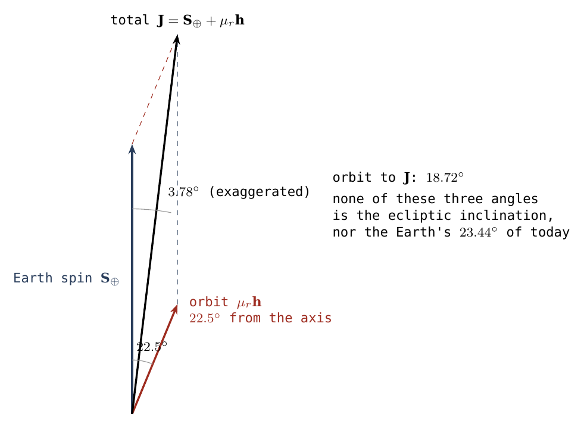
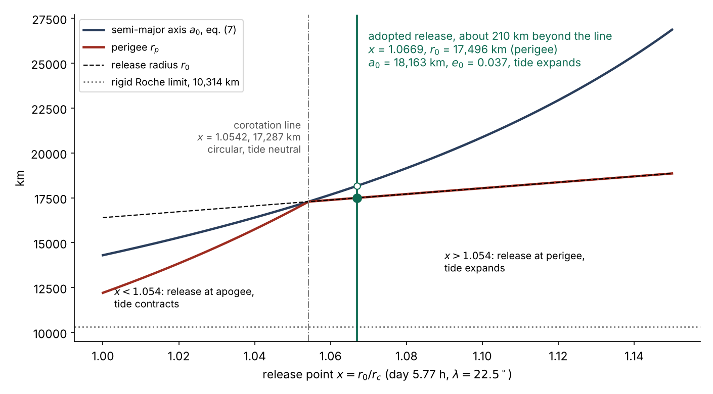
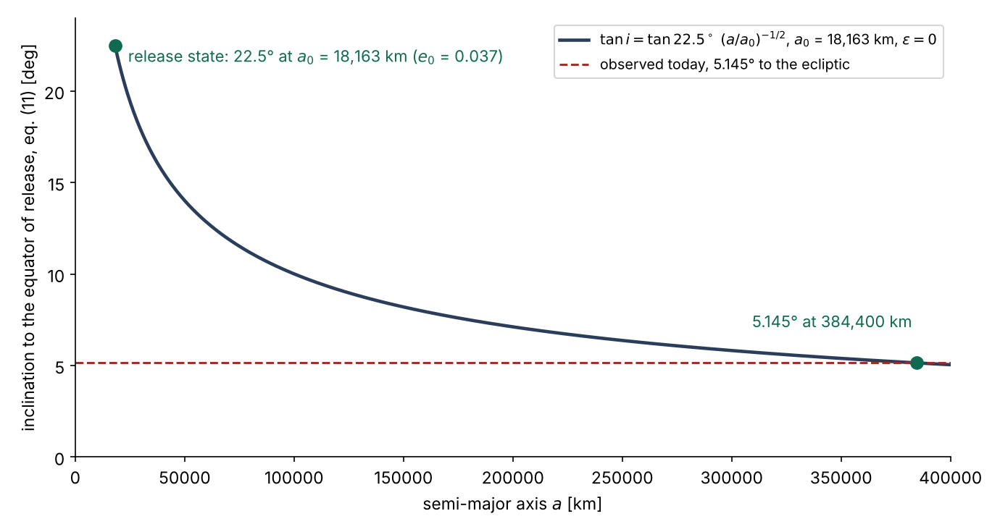
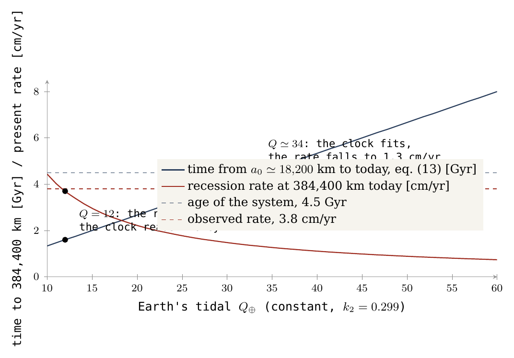

कक्षा
मुक्ति के बाद: विलगन की स्थितियों से झुकाव, अस्तित्व और दूर हटना
वह परिवेश जिससे गणना आरंभ होती है
यह शोधपत्र प्रस्तावित निर्माण के अंत से आरंभ होता है। LEF मॉडल में पृथ्वी का पदार्थ भीतर से पोषण द्वारा एक संलग्न पिंड का निर्माण करता है, और बाहरी कवच उसके साथ ऊपर उठता है। पिंड मूल पिंड की नाशपाती-आकृति संरचना के शीर्ष पर एक चपटी गेंद की तरह बैठा रहता है: संपर्क क्षेत्र की चौड़ाई लगभग 6,000 km से घटकर 3,000 km रह जाती है, और फिर पिंड गोल और दृढ़ होकर अलग हो जाता है। Paper 2, LEF Mechanism in Principle (सिद्धांत में LEF क्रियाविधि), कोणीय संवेग के संतुलन, सह-घूर्णन और मुक्ति की शर्तों की जाँच करता है; Paper 3, LEF Mechanism in Practice (व्यवहार में LEF क्रियाविधि), निर्माण और जुड़ाव से संबंधित है। यह शोधपत्र चंद्रमा की मुक्ति के क्षण से आगे बढ़ता है और मुक्ति-बिंदु से वर्तमान लक्ष्य अवस्था तक की कक्षीय गतिकी का आकलन करता है: वह कक्षा जो ये प्रारंभिक शर्तें उत्पन्न करती हैं, और आज की कक्षा तक उसके विकास की आवश्यकताएँ।
प्रक्रिया के दौरान तंत्र बदलता है — द्रव्यमान एक पिंड से दूसरे में जाता है, पृथ्वी का घूर्णन और आकृति बदलते हैं — इसलिए नीचे दी गई प्रत्येक संख्या एक निर्धारित क्षण से संबद्ध है। तालिका में तीन स्तंभ हैं: पहला क्षेत्र बताता है, दूसरा इस शोधपत्र में प्रयुक्त अवस्था या मान, और तीसरा संख्या का प्रकार और उसके उपयोग का अनुमत ढंग। तीसरा स्तंभ तुरंत उन मानों में भेद करता है जो परिदृश्य की मान्यताओं के रूप में रखे गए हैं और उन परिणामों में जो Papers 2 और 3 से आते हैं।
|
क्षेत्र |
यहाँ प्रयुक्त अवस्था या मान | स्थिति और अर्थ |
|---|---|---|
| समय | प्राचीन तंत्र का आरंभ; कक्षीय घड़ी का शून्य-बिंदु पृथक्करण है | पृथक्करण का समय इस शोधपत्र में पुनः निर्धारित नहीं किया जाता |
| निर्माण की अवधि | शृंखला का परिदृश्य: उभार के आरंभ से 3.873 Ga पर मुक्ति तक लगभग 600 मिलियन वर्ष तक (उभार और नाशपाती-आकृति के बनने के लिए लगभग 400 Myr, चपटेपन के चरण के लिए लगभग 100 Myr और मुक्ति तक लगभग 100 Myr) | परिदृश्य का मान; चंद्र सागरों और भूपर्पटी के आयु-अंतर से व्युत्पन्न नहीं, और पृथक्करण के बाद अपसरण की अवधि नहीं |
| प्रारंभिक द्रव्यमान | विभाजन से पहले पूरे तंत्र का द्रव्यमान; चंद्र द्रव्यमान को दूसरी बार नहीं जोड़ा जाना चाहिए | |
| विभाजन के बाद के द्रव्यमान | , | शृंखला में साझा पूर्णांकित मान |
| कक्षीय गुरुत्व | दोनों पिंडों की सापेक्ष पृथक्करण गति को परिभाषित करता है | |
| निर्माण के आरंभ में घूर्णन | निर्माण-चरण के आरंभ में 5.5 घंटे, संदर्भ परिदृश्य में | निर्माण के दौरान बदलता है; यह अवधि पृथक्करण के क्षण पर स्वतः नहीं रखी जानी चाहिए |
| मूल पिंड की संरचना | Paper 2 का आकृति और जड़त्व-आघूर्ण मॉडल; स्थानांतरण के दौरान क्रोड का केंद्र की ओर एकत्रण, मुक्ति पर | क्रोड का पुनर्गठन जड़त्व-आघूर्ण, घूर्णन और अगोलीय क्षेत्र को बदलता है |
| प्राचीन मूल पिंड के आयाम | आयतनिक त्रिज्या: 6,517 km; प्रारंभिक भूमध्यरेखीय त्रिज्या: लगभग 6,721 km | भूमध्यरेखीय आकृति की गणना Paper 2 में घूर्णन के परिवर्तनों के साथ पुनः की जाती है |
| तुलनात्मक दूरी इकाई | केवल प्रस्तुति की इकाई; प्राचीन पृथ्वी की त्रिज्या का प्रतिनिधित्व नहीं करती | |
| मुक्ति अक्षांश | , उस संपर्क क्षेत्र के केंद्र का अक्षांश जिस पर चंद्रमा बैठा था | मुक्ति के क्षण घूर्णन अक्ष के सापेक्ष द्रव्यमान-केंद्र का अक्षांश: संपर्क क्षेत्र का केंद्र, नाशपाती-आकृति के शीर्ष पर — नाशपाती-आकृति के आधार से भिन्न, जो Kiritimati, 1.9N 157.5W, के निकट, लगभग उस समय की भूमध्यरेखा पर स्थित था (Paper 3), और 25N 165E पर स्थित नाशपाती-आकृति के पृष्ठ भाग से भी भिन्न |
| मुक्ति अवस्था | , , | पृथक्करण के क्षण के देहली मान: चंद्रमा अलग होना तब आरंभ करता है जब उसका द्रव्यमान-केंद्र उस रेखा पर पहुँचता है जहाँ घूर्णन द्वारा प्रदत्त चाल, , कक्षीय चाल के बराबर होती है (17,287 km; Paper 2, §B.1), और उससे लगभग 210 km आगे मुक्त होता है, जब उसका आधे से कुछ अधिक भाग (लगभग 58%) रेखा पार कर चुका होता है; मुक्ति की क्रियाविधि और मुक्ति-दूरी की खोज Paper 3 (§C.5–C.5a) का विषय हैं |
| मुक्त पिंड का घनत्व | , त्रिज्या लगभग 1,890 km | उत्तरजीविता परीक्षण की कार्यकारी मान्यता; वर्तमान चंद्रमा का घनत्व नहीं |
| ऊष्मा, वाष्पशील पदार्थ और वायुमंडल | एक तप्त पिंड जो वायुमंडल के माध्यम से ठंडा होता है; पदार्थ और परिवेश में वाष्पशील पदार्थ | शृंखला की गुणात्मक शर्तें; इस काल के लिए तापमान, वाष्प दाब और कक्षीय कर्षण का मात्रात्मक मापन नहीं हुआ |
| प्रवाहिकी (रियोलॉजी) | परिवर्ती सामर्थ्य वाले आवरण और जुड़ाव; ज्वारीय अपव्यय फलन पदार्थ की अवस्था और आवृत्ति पर निर्भर है | फिसलन-परत की श्यानता को पूरे पिंड के ज्वारीय अपव्यय के समान नहीं माना जाना चाहिए |
| जुड़ाव | नाशपाती-आकृति के शीर्ष पर एक चपटा पिंड; संपर्क क्षेत्र लगभग 6,000 km की चौड़ाई से छँटकर 3,000 km रह जाता है, और पृथक्करण इसी चौड़े, तप्त और श्यान संपर्क से होता है | तप्त श्यान प्रतिरोध और बाह्य तनन बलों के अधीन पृथक्करण: पिंड अलग होना तब आरंभ करता है जब उसका द्रव्यमान-केंद्र अक्षांश-संशोधित सह-घूर्णन त्रिज्या पर पहुँचता है, और उससे लगभग 210 km आगे मुक्त होता है; संपर्क थोड़ा ही प्रतिरोध करता है, और पिंड बल के साथ बाहर की ओर खींचा जाता है; स्वयं पृथक्करण का वर्णन Paper 3 में है |
| लक्ष्य अवस्था | , , , अपसरण दर: लगभग 3.8 cm/yr | आधुनिक प्रेक्षणों से तुलनात्मक आँकड़े [S1] |
तालिका की कुछ पंक्तियों को व्याख्या की आवश्यकता है।
द्रव्यमान का संरक्षण। प्रारंभिक द्रव्यमान, kg, आज की पृथ्वी और आज के चंद्रमा के द्रव्यमानों का योग है: विभाजन से पहले चंद्र पदार्थ मूल पिंड का भाग है, और पृथक्करण के दौरान वह मूल पिंड के भंडारों से घटकर एक स्वतंत्र पिंड में चला जाता है। अतः वही द्रव्यमान चंद्रमा है, और उसे एक ही बार गिना जाता है। उस गुरुत्व की प्रबलता है जो दोनों पिंडों की एक-दूसरे के परितः गति को नियंत्रित करता है; इसकी गणना दोनों द्रव्यमानों के योग से की जाती है, क्योंकि प्रत्येक पिंड दूसरे को खींचता है।
घूर्णन का विकास। 5.5 घंटे का दिन निर्माण के आरंभ का है; मुक्ति के क्षण पृथ्वी का दिन 5.77 घंटे है। लंबी होती नाशपाती-आकृति ने पृथ्वी को धीमा किया, और उसके केंद्र की ओर लोहे के एकत्रण (, क्रोड घनत्व और मैंटल घनत्व का अनुपात) ने उसे फिर से तेज़ किया (Paper 2)।
दूरियों का मापन। पृथ्वी की वर्तमान त्रिज्या, 6,371 km, केवल संदर्भ इकाई के रूप में प्रयुक्त होती है — दूरियाँ प्रस्तुत करने का एक पैमाना — और युवा पृथ्वी के आयामों को नहीं दर्शाती, जो तप्त और बड़ी थी।
मुक्ति अक्षांश। शृंखला में तीन स्थानों का उल्लेख आता है, और उनमें भेद करना आवश्यक है। नाशपाती-आकृति का आधार — वह स्थान जहाँ नाशपाती-आकृति पृथ्वी की सतह से उठी — Kiritimati, 1.9N 157.5W (Paper 3), के निकट, लगभग उस समय की भूमध्यरेखा पर स्थित था; वह भूमध्यरेखा आज की भूमध्यरेखा है या नहीं, यह प्रश्न पृथ्वी–चंद्रमा तंत्र के अक्षों के अध्ययन पर, भावी कार्य में, छोड़ा गया है। निर्देशांक 25N 165E, जो Paper 3 से ही है, नाशपाती-आकृति का पृष्ठ भाग है। कक्षा के लिए निर्णायक अक्षांश इनमें से कोई नहीं है: वह 3,000 km चौड़े उस संपर्क क्षेत्र के केंद्र का अक्षांश है जिस पर चंद्रमा मुक्ति के क्षण बैठा था, नाशपाती-आकृति के शीर्ष पर: 22.5।
लक्ष्य अवस्था। अंतिम पंक्ति वह लक्ष्य है जिस तक मॉडल को पहुँचना है: चंद्रमा की वर्तमान माध्य दूरी , उसकी उत्केंद्रता (कक्षा वृत्त से कितनी हटती है; 0 पूर्ण वृत्त है) और क्रांतिवृत्त, अर्थात सूर्य के परितः पृथ्वी की कक्षा के तल, के सापेक्ष उसका नति-कोण।
उच्चतर कोटि के गुरुत्वीय आघूर्ण। गुरुत्व दो नियमों में “विभाजित” नहीं होता; स्थानांतरण के दौरान जो बदलता है वह अंतरिक्ष में द्रव्यमान का वितरण है। एक बार दोनों द्रव्यमान निश्चित हो जाएँ, तो एकध्रुव सन्निकटन में — अर्थात प्रत्येक पिंड को ऐसे मानते हुए मानो उसका सारा द्रव्यमान उसके केंद्र पर केंद्रित हो — केंद्रों की गति द्वारा निर्धारित होती है, जबकि क्रोड का पुनर्गठन मुख्यतः जड़त्व-आघूर्ण, घूर्णन और उच्चतर गुरुत्वीय आघूर्णों (उभार और आंतरिक स्तरों के कारण क्षेत्र का बिंदु-क्षेत्र से अगोलीय विचलन) के माध्यम से कार्य करता है। महत्त्वपूर्ण द्रव्यमान वाला जुड़ाव उस द्रव्यमान को अन्य भंडारों से घटाने और तंत्र की पुनः गणना की माँग करता है; यह कोई मुक्त जोड़ नहीं है।
निर्माण और पृथक्करण की क्रियाविधि। LEF मॉडल में चंद्रमा पृथ्वी से उत्पन्न पदार्थ से, मूल पिंड से संलग्न रहते हुए, बना, और उसके बाद ही एक स्वतंत्र कक्षा में मुक्त हुआ। यह शोधपत्र ऐसी मुक्ति के कक्षीय परिणाम की जाँच करता है।
प्रारंभिक नति-कोण का ज्यामितीय उद्गम। किसी कक्षा का नति-कोण उस तल, जिसमें पिंड परिक्रमा करता है, और एक संदर्भ तल — यहाँ उस समय की पृथ्वी की भूमध्यरेखा — के बीच का कोण है। एक पिंड जिसका केंद्र अक्षांश पर है, और मुक्ति के क्षण जिसका स्पर्शरेखीय वेग केवल घूर्णन की दिशा में कार्य करता है, उस समय की भूमध्यरेखा के सापेक्ष प्रारंभिक नति-कोण प्राप्त करता है। अतः किसी मध्यवर्ती अक्षांश पर स्थानीय मुक्ति प्रारंभिक नति-कोण का एक ज्यामितीय उद्गम है।
अक्षांश का निर्धारण। दो टिप्पणियाँ निर्धारित करती हैं कि क्या है। यह मुक्ति के क्षण पिंड के केंद्र का अक्षांश है, उसके आधार के किसी बिंदु का नहीं: 3,000 km चौड़े पिंड का एक ही वेग सदिश होता है, और उसके आधार का विस्तार नति-कोण को नहीं फैलाता। और यह 3,000 km चौड़े उस संपर्क क्षेत्र के केंद्र का अक्षांश है जिस पर चंद्रमा बैठा था, नाशपाती-आकृति के शीर्ष पर: 22.5°, वह मान जो इस पूरे शोधपत्र में प्रयुक्त है। 25° संवेदनशीलता उदाहरण के रूप में कार्य करता है: उच्चतर अक्षांश बड़ा प्रारंभिक नति-कोण देता है, और आज के 5.1° तक के मार्ग में उसका अधिक भाग लुप्त होना चाहिए। भाग D के tan-नियम के अनुसार, 22.5° से मॉडल की मुक्ति आज का लक्ष्य नति-कोण, 5.145°, पुनः प्राप्त करती है, और 25° से मुक्ति 5.79° देती है (एक पूर्व संस्करण ने, जिसमें मुक्ति रेखा से लगभग 100 km आगे थी, 22.5° से 5.079° दिया)।
मुक्ति अवस्था। Paper 2 के साथ मिलाकर मुक्ति अवस्था निश्चित है: मुक्ति के क्षण पृथ्वी का दिन 5.77 घंटे है (लंबी होती नाशपाती-आकृति और केंद्र की ओर एकत्र होता क्रोड साथ-साथ कार्य करते हैं), और चंद्रमा का केंद्र अक्षांश 22.5 पर है। भूमध्यरेखा से हटकर घूर्णन पिंड को की चाल प्रदान करता है, इसलिए पिंड कक्षीय चाल km () पर प्राप्त करता है, जो उसके अक्षांश की सह-घूर्णन रेखा है। चंद्रमा अलग होना तब आरंभ करता है जब उसका द्रव्यमान-केंद्र इस रेखा पर पहुँचता है, और उससे लगभग 210 km आगे, km () पर, मुक्त होता है, जब उसका आधे से कुछ अधिक भाग रेखा पार कर चुका होता है; संपर्क थोड़ा ही प्रतिरोध करता है, और पिंड बल के साथ बाहर की ओर खींचा जाता है।
पहली कक्षा। इस बिंदु पर अलग होकर पिंड लगभग वृत्ताकार कक्षा () में प्रवेश करता है, जो उस समय की भूमध्यरेखा से 22.5 झुकी है, और मुक्ति-बिंदु उसका उपभू है। ज्वार पहले ही क्षण से बाहर की ओर धकेलता है, इसलिए चंद्रमा आरंभ से ही दूर हटता है। मुक्ति के क्षण चंद्रमा गोल है, दृढ़ बाहरी कवच के साथ, और वह 10,314 km पर स्थित दृढ़ रोश सीमा से लगभग 7,200 km बाहर है। मुक्ति-दूरी वह बिंदु है जहाँ दो सरलीकृत परीक्षण — आज का नति-कोण और आज की उत्केंद्रता — मिलते हैं (Paper 3, §C.5a)।
आगे के परीक्षण। इसके बाद लाप्लास तल में संक्रमण, ज्वारीय अपव्यय और तापीय इतिहास के परीक्षण प्रस्तुत किए जाते हैं। सरलीकृत क्षय समीकरण का हल से संबंधित है, से नहीं; इस समीकरण में का स्पष्ट निरसन पूर्ण कक्षा की शीतलन दर और अनुनादों पर निर्भरता को निरस्त नहीं करता। विश्लेषण नति-कोण के ज्यामितीय उद्गम को और मुक्ति की शर्तों तथा प्रारंभिक कक्षाओं के बीच संगति को स्थापित करता है। अगला आवश्यक चरण आज की दूरी, नति-कोण, उत्केंद्रता और अपसरण दर का संयुक्त पुनर्निर्माण है, जिसकी गणना अभी की जानी है।
चंद्रमा की कक्षा का नति-कोण वह अक्षांश है जहाँ से वह निकला। अक्षांश पर पृथ्वी के साथ सह-घूर्णन में रहते हुए मुक्त होने वाला पिंड ऐसी कक्षा में प्रवेश करता है जिसका पृथ्वी की भूमध्यरेखा से नति-कोण ठीक के बराबर है: , बीजगणित की तीन पंक्तियाँ, समायोजन के लिए कोई मुक्त प्राचल नहीं। एक चक्रिका यह नहीं कर सकती — चक्रिका अनिवार्य रूप से भूमध्यरेखीय तल में बैठ जाती है — इसी कारण चंद्र नति-कोण तीस वर्षों से एक खुली समस्या है, और इसके लिए प्रस्तावित प्रत्येक समाधान चित्र में कुछ जोड़ता है। से मुक्ति पर चंद्रमा का प्रारंभिक नति-कोण है; ज्वारीय बलों द्वारा पिंड के दूर हटने के साथ सरलीकृत नियम उसे आज की दूरी पर तक लाता है, जो प्रेक्षित मान है। संवेदनशीलता उदाहरण में वही नियम देता है।
वही ज्यामिति यह निर्धारित करती है कि पिंड को कहाँ मुक्त होना चाहिए था, और यह शोधपत्र यही कहता है। भूमध्यरेखीय सह-घूर्णन त्रिज्या पर अक्षांश का पिंड वृत्ताकार कक्षा के लिए आवश्यक चाल से धीमा चलता है: उसकी कक्षा उत्केंद्र है (), मुक्ति अपभू पर होती है, और पृथ्वी का ज्वार आरंभ में उसे भीतर की ओर खींचता है। भूमध्यरेखा से हटकर घूर्णन द्वारा प्रदत्त चाल है, इसलिए अक्षांश-संशोधित सह-घूर्णन रेखा थोड़ा और दूर, , 17,287 km पर स्थित है। पृथक्करण की प्रक्रिया तब आरंभ होती है जब चंद्रमा का द्रव्यमान-केंद्र इस रेखा पर पहुँचता है, और मुक्ति उससे लगभग 210 km आगे, , km पर, होती है, जब उसका आधे से कुछ अधिक भाग रेखा पार कर चुका होता है: संपर्क क्षेत्र थोड़ा ही प्रतिरोध करता है, और पिंड बल के साथ बाहर की ओर खींचा जाता है। परिणामस्वरूप चंद्रमा लगभग वृत्ताकार कक्षा () में प्रवेश करता है जिसका उपभू मुक्ति-बिंदु है; ज्वार पहले ही क्षण से बाहर की ओर धकेलता है, इसलिए वह अपनी पहली कक्षा से दूर हटता है, जो 10,314 km की दृढ़ रोश सीमा से लगभग 7,200 km बाहर है। (एक पूर्व संस्करण ने, जिसमें मुक्ति रेखा से लगभग 100 km आगे थी, km और दिया; उससे भी पहले का संस्करण रेखा से और आगे, पर, मुक्ति पर आधारित था।) मुक्ति के क्षण चंद्रमा गोल है और उसका बाहरी कवच दृढ़ है (अक्ष-अनुपात अधिकतम 1.04, Paper 2, §B.7); उसका चपटापन और गोलाई जुड़ाव के चरण में हुए (Paper 7)। Paper 3 संपर्क क्षेत्र से पृथक्करण का वर्णन करता है, और Paper 2 कोणीय संवेग संतुलन की ओर से उसी मुक्ति अवस्था तक पहुँचता है। सरलीकृत नियम जिसे नहीं समेटता वह है पूरा इतिहास: लाप्लास तल में संक्रमण, कैसिनी अवस्था, जीवाश्म आकृति और एक अपव्यय जो अनिवार्य रूप से समय के साथ बदला — एक अकेला स्थिर या तो आज की अपसरण दर से मेल खाता है या आयु से, दोनों से नहीं। इनमें से प्रत्येक भाग E में उस परीक्षण के साथ सूत्रबद्ध है जो उसकी जाँच करेगा। मॉडल की आवश्यकताएँ, और जो उसकी परीक्षा करेगा, Paper 11 (The Requirements — आवश्यकताएँ) में एकत्र हैं।
यह बॉक्स दो दावे करता है, और हम उन्हें यहाँ सरल शब्दों में प्रस्तुत करते हैं। नति-कोण का यांत्रिक उद्गम। पहला दावा दिशा के विषय में है। अक्षांश 22.5° पर पृथ्वी के साथ सह-घूर्णन में स्थित पदार्थ स्थानीय अक्षांश-वृत्त के साथ, भूमध्यरेखीय तल के समांतर, पूर्व की ओर चलता है। मुक्ति के साथ प्रक्षेप्य पथ केंद्रीय गुरुत्व-क्षेत्र द्वारा निर्धारित होता है, इसलिए उसके तल को पृथ्वी के द्रव्यमान-केंद्र से होकर गुज़रना ही होगा — गुरुत्व उसी ओर खींचता है। पृथ्वी के द्रव्यमान-केंद्र, 22.5° उत्तर अक्षांश पर स्थित मुक्ति-बिंदु और पूर्व की ओर इंगित स्पर्शरेखीय वेग सदिश द्वारा परिभाषित तल प्राचीन भूमध्यरेखीय तल के सापेक्ष 22.5° का प्रारंभिक कक्षीय नति-कोण देता है। और कुछ आवश्यक नहीं: द्रव्यमान, दूरी और घूर्णन दर परिणाम में प्रवेश नहीं करते। “बीजगणित की तीन पंक्तियाँ, कोई प्राचल नहीं” का यही अर्थ है: परिणाम तीन पंक्तियों में (भाग A के समीकरण 1–3) संवृत रूप में परिभाषित है, और उसमें कोई ऐसी संख्या नहीं जिसे मेल बैठाने के लिए समायोजित किया जा सके। यह क्रियाविधि संघट्ट मॉडल के चक्रिका-चित्र से भिन्न है, जिसमें चंद्रमा उस मलबे से बनता है जो भूमध्यरेखा के ऊपर एक सपाट वलय में फैल जाता है; वहाँ पिंड लगभग शून्य नति-कोण से आरंभ करता है, जिसके लिए वर्तमान नति-कोण उत्पन्न करने हेतु एक द्वितीयक गतिक क्रियाविधि आवश्यक है।
स्थानीय सह-घूर्णन रेखा का अंशांकन। दूसरा दावा दूरी के विषय में है। भूमध्यरेखीय तल में सह-घूर्णन त्रिज्या वह दूरी है जिस पर स्पर्शरेखीय चाल वृत्ताकार कक्षीय चाल के बराबर होती है; 5.77 घंटे के दिन के लिए यह 16,399 km है। भूमध्यरेखा से हटकर घूर्णन अक्ष तक की दूरी द्रव्यमान-केंद्र से दूरी की तुलना में गुणक से छोटी होती है, जिससे घूर्णन द्वारा प्रदत्त रैखिक चाल उसी दूरी पर स्थित भूमध्यरेखीय पिंड की तुलना में घट जाती है। कक्षीय चाल से समानता तक पहुँचने के लिए स्थानीय सह-घूर्णन त्रिज्या को बाहर की ओर खिसकाना आवश्यक है: अक्षांश 22.5° पर यह 17,287 km है, भूमध्यरेखीय त्रिज्या से 5.42% अधिक ()। स्थानीय सह-घूर्णन रेखा पर एक काल्पनिक मुक्ति तटस्थ ज्वारीय अन्योन्यक्रिया वाली वृत्ताकार कक्षा देती: चंद्रमा की परिक्रमा-चाल पृथ्वी के घूर्णन के उस घटक के ठीक बराबर होती जो उसकी कक्षा के अनुदिश कार्य करता है, इसलिए चंद्रमा द्वारा पृथ्वी पर उठाया गया ज्वारीय उभार न आगे खिसकता न पीछे, और कोई धक्का न देता। यांत्रिक पृथक्करण की प्रक्रिया तब आरंभ होती है जब चंद्रमा का केंद्र इस रेखा पर पहुँचता है, और भौतिक मुक्ति उससे लगभग 210 km आगे, 17,496 km की दूरी पर, होती है। तात्कालिक अपसरण। इस दूरी पर स्पर्शरेखीय चाल उसी त्रिज्या पर वृत्ताकार कक्षा के लिए आवश्यक चाल से थोड़ी अधिक है, इसलिए मुक्ति-बिंदु लगभग वृत्ताकार कक्षा () का उपभू है; और पृथ्वी चंद्रमा की परिक्रमा-दर से तेज़ घूमती है, इसलिए ज्वारीय उभार आगे खिसकता है, और उसका खिंचाव चंद्रमा पर एक धनात्मक स्पर्शरेखीय घटक लगाता है जो पृथक्करण के क्षण से अर्ध-दीर्घ अक्ष को बढ़ाता है। रोश सीमा वह दूरी है जिसके भीतर पृथ्वी का ज्वार पिंड को विखंडित कर देता; दृढ़ बाहरी कवच वाले पिंड के लिए यह 10,314 km है, और भौतिक मुक्ति-बिंदु इस यांत्रिक सीमा से लगभग 7,200 km बाहर स्थित है, जो पिंड के ज्वारीय विनाश को रोकता है। सरलीकृत क्षय नियम। नियम कक्षा के विस्तार के साथ नति-कोण के क्षय का वर्णन करता है: नति-कोण 22.5° के प्रारंभिक मान से घटता है और वर्तमान दूरी पर प्रेक्षित मान, 5.145°, तक पहुँचता है। भाग D दिखाता है कि यह एक सरलीकृत नियम है; पूर्ण अभिसरण-पथ — लाप्लास तल में संक्रमण और कैसिनी अवस्था, तथा समय के साथ बदलता ज्वारीय अपव्यय — भाग E में सूचीबद्ध आवश्यकताओं का भाग है।
मुक्ति के क्षण कौन-सा नति-कोण प्राप्त होता है?
विश्लेषण दो भिन्न कोणों को अलग करता है: मूल पिंड की सतह पर मुक्ति-बिंदु का भौगोलिक अक्षांश, और क्रांतिवृत्त के सापेक्ष कक्षीय नति-कोण। पहले प्राचीन भूमध्यरेखा के सापेक्ष नति-कोण व्युत्पन्न किया जाता है; फिर आज के प्रेक्षण-ढाँचे में संक्रमण की जाँच की जाती है।
यह भाग एक प्रश्न का उत्तर देता है: मुक्ति के क्षण चंद्रमा की नई कक्षा किस कोण पर झुकी होती है? पहले यह प्रश्न को अन्य मॉडलों के सापेक्ष रखता है (A.1), फिर उत्तर व्युत्पन्न करता है (A.2), और अंत में उन तीन कोणों को अलग करता है जो पृथ्वी के अक्ष और चंद्रमा की कक्षा पर साथ-साथ विचार करते समय सहज ही भ्रमित हो जाते हैं (A.3)। प्राचीन भूमध्यरेखा से आज के क्रांतिवृत्त तक का संक्रमण भाग C का विषय है।
संदर्भ-ढाँचों की परिभाषा। प्रत्येक कक्षा एक तल में स्थित होती है: पिंड उस तल में परिक्रमा करता है, और पृथ्वी का केंद्र उसमें स्थित होता है। कक्षीय नति-कोण इस तल और एक चुने हुए संदर्भ तल के बीच का कोण है। इस शोधपत्र में दो संदर्भ तल आते हैं। पहला मुक्ति के समय पृथ्वी का भूमध्यरेखीय तल है — प्रारंभिक चरण में स्वाभाविक संदर्भ, जब चंद्रमा अभी-अभी घूमती पृथ्वी को छोड़ चुका है। दूसरा क्रांतिवृत्त है, सूर्य के परितः पृथ्वी की कक्षा का तल, जिसके सापेक्ष चंद्रमा का वर्तमान नति-कोण, 5.145°, मापा जाता है। व्युत्पत्ति एक समतुल्य वर्णन का उपयोग करती है, कक्षीय तल के लंबवत दिशा (कोणीय संवेग सदिश) के माध्यम से: नति-कोण इस लंब और संदर्भ तल के लंब के बीच का कोण है — और भूमध्यरेखा के लिए, पृथ्वी का घूर्णन अक्ष।
A.1अन्य मॉडलों का संदर्भ
भूमध्यरेखीय तल के निकट की चक्रिका से निर्माण वर्तमान नति-कोण के उद्गम का प्रश्न उठाता है। विशाल-संघट्ट परिदृश्यों के परिवार में टक्कर से बाहर फेंका गया पदार्थ पृथ्वी की भूमध्यरेखा के ऊपर एक चक्रिका में बैठ जाता है, और इस चक्रिका से संघनित होने वाला चंद्रमा लगभग भूमध्यरेखीय तल में परिक्रमा करता है; वर्तमान नति-कोण बाद के किसी चरण में प्रदान किया जाना चाहिए। साहित्य में विलंबित गतिक उत्तेजन की क्रियाविधियाँ सम्मिलित हैं, जैसे ग्रहाणुओं से अन्योन्यक्रिया [S2] और उच्च अक्षीय झुकाव वाले तंत्र का युग्मित विकास [S3], अतः चक्रिका से निर्माण नति-कोण के विलंबित उत्तेजन को अस्वीकार नहीं करता। यहाँ जाँचा गया अंतर यह है कि LEF मुक्ति के क्षण ही एक उल्लेखनीय नति-कोण से आरंभ करता है, प्रारंभिक कोण उत्पन्न करने के लिए विलंबित उत्तेजन की आवश्यकता के बिना। LEF में नति-कोण कोई अतिरिक्त घटना नहीं है: यह एक प्रत्यक्ष ज्यामितीय उद्गम है, और नति-कोण इसी से निर्धारित होता है कि घूमती पृथ्वी पर पिंड कहाँ संलग्न था।
A.2व्युत्पत्ति
ज्यामितीय चित्र। बीजगणित से पहले, चित्र। एक हिंडोले की कल्पना कीजिए जिसका मध्य पृथ्वी के केंद्र पर है, और मान लीजिए कि उसके निकट किसी भी वस्तु पर एकमात्र खिंचाव उस केंद्रीय बिंदु की ओर है। एक पत्थर केंद्र से ऊपर किसी ऊँचाई पर स्थिर वलय पर घुमाया जाता है, जैसे सीटों की एक ऊँची पंक्ति। घुमाए जाते समय पत्थर क्षैतिज रूप से चलता है — अपने वलय के साथ, फ़र्श के समांतर। अब उसे छोड़ दीजिए। वह उसी क्षैतिज वेग के साथ निकलता है, किंतु उस पर खिंचाव केंद्रीय बिंदु की ओर, नीचे और भीतर, है। अतः उसका मुक्त पथ उस एकमात्र तल में होना चाहिए जिसमें केंद्रीय बिंदु और पत्थर का वेग दोनों हों: एक तल जो पत्थर से, उसकी गति की दिशा में, निकलता है और केंद्र से होकर नीचे जाता है। यह तल फ़र्श से ठीक उसी कोण पर झुका है जिस पर पत्थर केंद्र से, फ़र्श के ऊपर, दिखाई देता है। ऊँचे वलय पर स्थित पत्थर अधिक तीव्र कोण पर दिखता है और अधिक तीव्र झुकी कक्षा में प्रवेश करता है; स्वयं फ़र्श पर स्थित पत्थर फ़र्श के तल में ही रहता है। पृथ्वी के लिए फ़र्श भूमध्यरेखा है, वलय अक्षांश-वृत्त है, और जिस कोण पर पिंड केंद्र से दिखता है वह उसका अक्षांश है। नीचे के समीकरण यही बात तीन पंक्तियों में व्यक्त करते हैं।
मुक्ति के क्षण घूर्णन अक्ष को एक कार्तीय निर्देशांक-तंत्र का अक्ष मानिए, अक्ष इस प्रकार निर्धारित है कि पिंड का द्रव्यमान-केंद्र – तल में रहे; अक्ष पिंड के स्थान पर स्पर्शरेखीय घूर्णन की दिशा में, पूर्व की ओर, इंगित करता है। पूर्व की ओर सह-घूर्णन वेग के लिए, एक जड़त्वीय ढाँचे में (जो पृथ्वी के साथ नहीं घूमता) और द्रव्यमान-केंद्रों के बीच पृथक्करण के साथ, स्थिति सदिश और वेग सदिश इस प्रकार परिभाषित हैं:
जहाँ पृथ्वी के केंद्र के सापेक्ष पिंड के केंद्र की स्थिति है, दूरी और अक्षांश पर; उसका वेग है, और पृथ्वी की स्व-घूर्णन दर। अक्ष के परितः पिंड की घूर्णन त्रिज्या है, इसलिए घूर्णन द्वारा प्रदत्त पूर्व की ओर रैखिक चाल है; यही वह चाल है जो परिवेश तालिका में दी गई है।
विशिष्ट कोणीय संवेग और शुद्धगतिक सर्वसमिका। विशिष्ट कोणीय संवेग — प्रति इकाई द्रव्यमान कोणीय संवेग, — एक सदिश है जो और दोनों के लंबवत है, और अतः कक्षीय तल के लंबवत। उसकी दिशा कक्षा का “अक्ष” है, और केंद्रीय गुरुत्व-क्षेत्र के अंतर्गत मुक्ति के बाद वह संरक्षित रहती है। सदिश गुणनफल देता है:
उसका परिमाण है। भूमध्यरेखा से नति-कोण और घूर्णन अक्ष के बीच का कोण है, और उसकी कोज्या के घटक और उसके परिमाण के अनुपात से प्राप्त होती है। अतः प्रगामी गति के लिए (पृथ्वी के घूर्णन की ही दिशा में) जो ध्रुव से होकर न गुज़रे:
गुणक अंश और हर दोनों में आता है और कट जाता है; केवल अक्षांश बचता है। शर्त “जो ध्रुव से होकर न गुज़रे” आवश्यक है क्योंकि ध्रुव पर पिंड घूर्णन अक्ष पर स्थित होता है, किसी चाल से वहन नहीं होता, और उसकी कोई परिभाषित कक्षा नहीं होती।
यह एक शुद्धगतिक सर्वसमिका है: यह केवल गति की ज्यामिति से निकलती है, न कि पदार्थ के किसी गुण से या केंद्रीय खिंचाव से परे किसी बल-नियम से। द्रव्यमान, दूरी और घूर्णन दर प्रारंभिक नति-कोण को प्रभावित नहीं करते, और वह केवल ज्यामितीय अक्षांश का फलन है। अक्षांश स्वयं मॉडल की एक प्रारंभिक शर्त है; सर्वसमिका न स्रोत के स्थान को निर्धारित करती है न पृथक्करण के घटित होने को, बल्कि अक्षांश और नति-कोण को एक ही राशि बना देती है: एक दिया हो, तो दूसरा निश्चित है।
द्वितीयक वेग-घटक। सर्वसमिका मुक्ति पर शुद्ध रूप से पूर्व की ओर वेग मानती है, जैसा सह-घूर्णन प्रदान करता है। दो अन्य वेग-घटक संभव हैं, और वे भिन्न रूप से कार्य करते हैं। एक अतिरिक्त अरीय वेग-घटक (सीधे बाहर या भीतर, के अनुदिश) को नहीं बदलता, क्योंकि का के अनुदिश किसी सदिश के साथ सदिश गुणनफल शून्य है; अतः वह स्वयं कक्षीय तल को नहीं बदलता: वह कक्षा की आकृति बदलता है, उसका नति-कोण नहीं। एक उत्तरी या दक्षिणी वेग-घटक , पूर्वी घटक के साथ, संबंध को इस समीकरण के अनुसार बदलता है:
चूँकि केवल वर्ग के रूप में आता है, उत्तरी और दक्षिणी दोनों घटक को छोटा करते हैं, और इस प्रकार कक्षा को से अधिक तीव्र झुकी बनाते हैं; के लिए समीकरण (4) समीकरण (3) पर लौट आता है।
मॉडल में मुक्ति अवस्था। अतः एक चौड़े जुड़ाव से पृथक्करण आंतरिक बलों के समाप्त होने के बाद द्रव्यमान-केंद्र का वेग निश्चित करता है। मॉडल में चंद्रमा अपने द्रव्यमान-केंद्र के सह-घूर्णन रेखा पर पहुँचने के साथ अलग होना आरंभ करता है, और उससे लगभग 210 km आगे अंतिम रूप से मुक्त होता है; संपर्क क्षेत्र दुर्बल प्रतिरोध लगाता है, और पिंड बल के साथ बाहर की ओर खींचा जाता है। यह बल त्रिज्या के अनुदिश कार्य करता है, और, जैसा ऊपर दिखाया गया, अरीय घटक कक्षा की आकृति बदलता है, उसका नति-कोण नहीं। पिंड घूर्णन द्वारा प्रदत्त पूर्व की ओर वेग के साथ मुक्त होता है, और इसलिए मुक्ति पर नति-कोण सीधे उसके केंद्र के अक्षांश से निर्धारित होता है: 22.5°।
A.3तीन कोण जिन्हें भ्रमित नहीं करना चाहिए
तंत्र का कोणीय संवेग। अब तक केवल कक्षा की जाँच हुई है। किंतु पृथ्वी भी अपने स्व-घूर्णन में कोणीय संवेग वहन करती है, और पृथ्वी का घूर्णन कोणीय संवेग चंद्रमा के कक्षीय कोणीय संवेग के साथ मिलकर तंत्र का कुल कोणीय संवेग बनाता है। एक बार पिंड मुक्त हो जाए और कोई बाहरी बल-आघूर्ण न हो, तो यही योग — न पृथ्वी का अक्ष और न कक्षा का अक्ष — जड़त्वीय अंतरिक्ष में एक स्थिर दिशा बनाए रखता है। अतः तंत्र तीन दिशाओं से परिभाषित है: पृथ्वी का घूर्णन अक्ष, चंद्रमा के कक्षीय तल का लंब, और उनका सदिश योग। यह खंड उनके बीच के कोण प्रस्तुत करता है, और परिभाषित करता है कि वे किसका प्रतिनिधित्व नहीं करते।
मुक्ति अवस्था में (Paper 2: पृथ्वी का घूर्णन कोणीय संवेग , चंद्रमा का कक्षीय कोणीय संवेग kg m s) एक ही सदिश त्रिभुज में तीन कोण प्राप्त होते हैं: कक्षा और पृथ्वी के अक्ष के बीच 22.5°, पृथ्वी के अक्ष और कुल कोणीय संवेग के बीच लगभग 3.78°, और कक्षा और कुल कोणीय संवेग के बीच लगभग 18.72°। कक्षीय सदिश पृथ्वी के घूर्णन कोणीय संवेग का लगभग पाँचवाँ भाग वहन करता है, इसलिए योग सदिश कक्षा की अपेक्षा पृथ्वी के अक्ष के कहीं अधिक निकट है: दोनों के बीच का 22.5° पृथ्वी की ओर 3.78° और कक्षा की ओर 18.72° में बँटता है ()। बाद के दोनों कोणों में से कोई भी स्वयं क्रांतिवृत्त के सापेक्ष नति-कोण नहीं है, और न ही आज पृथ्वी के अक्ष के 23.44° की व्याख्या है। मुक्ति के बाद पृथ्वी के अक्ष और चंद्रमा की कक्षा का आज के 23.44° की ओर संयुक्त विकास इस शृंखला में हल नहीं किया गया, और यह भावी कार्य का विषय है।
एक छोटे चंद्र स्व-घूर्णन की उपेक्षा करते हुए, और उस चरण में जहाँ कोई उल्लेखनीय बाहरी बल-आघूर्ण नहीं है, विभाजन का वर्णन इससे होता है:
अर्थात कुल कोणीय संवेग पृथ्वी के घूर्णन कोणीय संवेग और युग्म के कक्षीय कोणीय संवेग का योग है। कक्षीय भाग समीकरण (2) का विशिष्ट कोणीय संवेग है, जिसे समानीत द्रव्यमान से गुणा किया गया है, जो अपने उभयनिष्ठ द्रव्यमान-केंद्र के परितः परिक्रमा करते दो पिंडों का वर्णन करने वाला मानक द्रव्यमान है; पृथ्वी और चंद्रमा के बीच द्रव्यमान के बड़े अंतर के कारण चंद्रमा के अपने द्रव्यमान के अत्यंत निकट है।
पृथक्करण के दौरान निरंतरता। यह गणना अवस्थाओं के बीच संगति स्थापित करती है, न कि पृथक्करण के क्षण घूर्णन अक्ष को कोई अचानक आवेग (“झटका”): कोणीय संवेग का आदान-प्रदान निर्माण-चरण के दौरान संचित हो सकता है। दूसरे शब्दों में, चंद्रमा के जाने पर पृथ्वी का अक्ष एकाएक नहीं झुकता; त्रिभुज के कोण घूर्णन और कक्षा के बीच कोणीय संवेग के उस विभाजन का वर्णन करते हैं जो उस क्षण पहले से विद्यमान है। एक पूर्ण विवेचन में चंद्रमा का स्व-घूर्णन, निष्कासित पदार्थ से बल-आघूर्ण और बाहरी बल-आघूर्ण सम्मिलित होने चाहिए।
चित्र 4 त्रिभुज को एक उभयनिष्ठ मूल-बिंदु से दर्शाता है: गहरा नीला तीर पृथ्वी का घूर्णन कोणीय संवेग है, लाल तीर कक्षा है, जो उससे 22.5° झुकी है, और काला तीर उनका योग है। धराशायी रेखाएँ सदिश योग के समांतर चतुर्भुज को पूरा करती हैं। चूँकि कक्षा का तीर सबसे छोटा है, योग पृथ्वी के अक्ष से केवल थोड़ा ही हटता है।

चौथी दिशा। कैप्शन में उल्लिखित चौथी दिशा क्रांतिवृत्त का लंब है, जो सूर्य के परितः पृथ्वी की गति से निर्धारित होता है, पृथ्वी–चंद्रमा युग्म के आंतरिक प्राचलों से स्वतंत्र। भाग A प्रारंभिक नति-कोण स्थापित करता है: मुक्ति के समय की भूमध्यरेखा के सापेक्ष 22.5°, जो पिंड के केंद्र के अक्षांश से निर्धारित है। भाग B उस कक्षा के आयाम और आकृति परिभाषित करता है जिसमें पिंड अपने मुक्ति-बिंदु पर प्रवेश करता है, और भाग C कक्षीय तल का बाहर की ओर, उस संदर्भ-ढाँचे तक अनुसरण करता है जिसमें आज का 5.145° मापा जाता है।
क्या पिंड ऐसी कक्षा में प्रवेश करता है जो टिकी रहे और दूर हटे?
सह-घूर्णन चाल अनिवार्यतः मुक्ति अक्षांश के अनुरूप वृत्ताकार कक्षीय चाल के समान नहीं है। हम परिणामी कक्षीय दीर्घवृत्त की गणना करते हैं, और उसे Paper 2 में विकसित ज्वारीय और उत्तरजीविता परीक्षणों से जोड़ते हैं।
भाग A ने दिखाया कि अक्षांश पर पृथ्वी के साथ सह-घूर्णन में मुक्त होने वाला पिंड पृथ्वी की भूमध्यरेखा से कोण पर झुकी कक्षा में प्रवेश करता है। यह भाग अगले प्रश्न से संबंधित है: इस कक्षा की आकृति और आयाम क्या हैं, क्या पृथ्वी का ज्वार उसके बाद उसे बाहर धकेलता है या भीतर खींचता है, और क्या पिंड पृथ्वी से इतना दूर है कि अखंड बना रहे? यह प्रश्न वास्तविक महत्त्व का है: यदि नति-कोण को वहन करने वाली कक्षा सर्पिल होकर पृथ्वी में गिर जाए या ज्वार पिंड को विखंडित कर दे, तो उस नति-कोण का कोई अर्थ नहीं।
समस्या की परिभाषा और शुद्धगतिक बाध्यताएँ। बॉक्स के पहले वाक्य को एक शब्द की व्याख्या चाहिए: अक्षांश पर पिंड को प्रदत्त सह-घूर्णन चाल उसी त्रिज्या पर वृत्ताकार कक्षीय चाल के समान नहीं है। मूल पिंड के घूर्णन अक्ष के परितः सह-घूर्णन में स्थित पिंड द्रव्यमान-केंद्र से पूरी दूरी पर नहीं, बल्कि अक्ष से छोटी स्थानीय त्रिज्या पर चलता है। परिणामस्वरूप वह भूमध्यरेखा के ऊपर उसी दूरी पर स्थित पिंड की अपेक्षा धीमे चलता है, और भूमध्यरेखीय सह-घूर्णन त्रिज्या पर मध्यवर्ती अक्षांश के पिंड की चाल वृत्ताकार कक्षा के लिए आवश्यक चाल से कम होती है। अतः वह जिस कक्षा में प्रवेश करता है वह एक दीर्घवृत्त है, और मुक्ति का स्थान इस प्रकार निर्धारित करना होता है कि यह शुद्धगतिक विचलन ध्यान में लिया जाए। यह खंड ज्ञात करता है कि कक्षा कहाँ वृत्त है, और चंद्रमा अपने वास्तविक मुक्ति-बिंदु पर, जो उससे थोड़ा आगे है, किस कक्षा में प्रवेश करता है।
B.1मुक्ति निर्देशांकों से दीर्घवृत्त तक
पृथ्वी के परितः कक्षा सामान्यतः एक दीर्घवृत्त होती है, और तीन संख्याएँ उसके आयाम और आकृति परिभाषित करती हैं। अर्ध-दीर्घ अक्ष दीर्घवृत्त के सबसे लंबे व्यास का आधा है, निकटतम और दूरतम दूरी का औसत; यह कक्षीय आवर्तकाल निर्धारित करता है। उत्केंद्रता मापती है कि दीर्घवृत्त कितना खिंचा हुआ है: वृत्त है, और 1 के निकट पहुँचते मान एक लंबे, संकरे दीर्घवृत्त का वर्णन करते हैं। कक्षा का पृथ्वी से निकटतम बिंदु उपभू है, दूरी पर; दूरतम बिंदु अपभू है, पर।
ऊर्जा और कक्षीय चाल का विश्लेषणात्मक प्राचलीकरण। मुक्ति के क्षण विमाहीन गतिक चरों को निम्न गुणांकों द्वारा परिभाषित करते हैं:
जहाँ मुक्ति के क्षण पृथ्वी के घूर्णन का कोणीय वेग है, पृथ्वी के केंद्र से चंद्रमा के द्रव्यमान-केंद्र की दूरी, उसका भौगोलिक अक्षांश, और तंत्र का कुल गुरुत्वीय प्राचल ( गुरुत्वीय स्थिरांक, और पृथ्वी और चंद्रमा के द्रव्यमान)। प्राचल का एक सरल अर्थ है: पिंड पूर्व की ओर चाल से चलता है, और इस चाल और उसी दूरी पर वृत्ताकार कक्षीय चाल के वर्गों का अनुपात है। इसके देहली मान कक्षा का स्वरूप परिभाषित करते हैं: का अर्थ है ठीक वृत्ताकार कक्षा की चाल के बराबर प्रारंभिक चाल; का अर्थ है उप-कक्षीय चाल (पिंड आवश्यकता से धीमा); , अति-कक्षीय चाल (पिंड आवश्यकता से तेज़); और परवलयिक पलायन चाल होगी। प्रति इकाई द्रव्यमान कुल कक्षीय ऊर्जा को दर्शाती है; यह ऋणात्मक है, इसलिए पिंड गुरुत्वीय रूप से पृथ्वी से बद्ध है, जब तक ।
द्वि-पिंड सन्निकटन में कक्षीय समीकरणों का हल। अरीय वेग-घटक रहित मुक्ति-शर्तों के लिए (उस क्षण पिंड न पृथ्वी की ओर चल रहा है न उससे दूर), जब , और दो बिंदु-द्रव्यमानों के सन्निकटन में (पृथ्वी और चंद्रमा को बिंदु-द्रव्यमान माना गया):
शब्दों में: मुक्ति-दूरी और एकमात्र प्राचल संपूर्ण प्रारंभिक कक्षा निर्धारित करते हैं। 1 से जितना दूर हो, दीर्घवृत्त उतना ही अधिक उत्केंद्र।
अपसाइडों की स्थिति। के लिए मुक्ति अपभू-बिंदु पर होती है; के लिए, उपभू-बिंदु पर; वृत्ताकार कक्षा देता है। कारण सीधा है: अपनी दूरी पर उप-कक्षीय चाल वाला पिंड भीतर गिरना आरंभ करता है, इसलिए मुक्ति-बिंदु उसकी कक्षा का दूरतम बिंदु है; अति-कक्षीय चाल वाला पिंड बाहर की ओर झूलता है, इसलिए मुक्ति-बिंदु निकटतम है।
अक्षांश के अनुसार स्थानीय सह-घूर्णन रेखा का अंशांकन। त्रिज्या पर — भूमध्यरेखीय सह-घूर्णन त्रिज्या, जहाँ भूमध्यरेखा के ऊपर पृथ्वी के साथ घूमते पिंड की चाल ठीक वृत्ताकार चाल होती है — अक्षांश पर स्थित पिंड का प्राचल होता है, जो प्रारंभिक उत्केंद्रता देता है, शून्य नहीं। ऊपर समझाया गया धीमापन है: पिंड अक्ष की परिक्रमा पर करता है, पर नहीं। शुद्ध वृत्ताकार कक्षा, , केवल मुक्ति-दूरी को अक्षांश-संशोधित सह-घूर्णन त्रिज्या, , पर खिसकाने से प्राप्त होती है, जहाँ घूर्णन द्वारा प्रदत्त चाल कक्षीय चाल के बराबर है। यह विस्थापन कमी वाली चाल की पूर्ति करता है, क्योंकि स्व-घूर्णन द्वारा प्रदत्त चाल त्रिज्या के साथ रैखिक रूप से बढ़ती है जबकि वृत्ताकार कक्षीय चाल घटती है; समीकरण (7a) वह दूरी देता है जहाँ अक्षांश के पिंड के लिए दोनों मिलती हैं।
संदर्भ मॉडल में पृथक्करण-चरण की संख्यात्मक बाध्यताएँ। 5.77 घंटे के प्राचीन दिन के लिए भूमध्यरेखीय सह-घूर्णन त्रिज्या km (लगभग 2.6 पृथ्वी-त्रिज्याएँ) है, और मुक्ति अक्षांश पर वृत्ताकार त्रिज्या — इस अक्षांश की स्थानीय सह-घूर्णन त्रिज्या — 17,287 km पर खिसक जाती है, लगभग 900 km और आगे, विमाहीन गुणक । यांत्रिक पृथक्करण की प्रक्रिया तब आरंभ होती है जब चंद्रमा का द्रव्यमान-केंद्र इस रेखा पर पहुँचता है, और अंतिम भौतिक मुक्ति उससे लगभग 210 km आगे, km () पर, होती है, जब पिंड के द्रव्यमान का आधे से कुछ अधिक भाग (लगभग 58%) रेखा पार कर चुका होता है। वहाँ , 1 से थोड़ा ऊपर: पिंड मध्यम अति-कक्षीय चाल में है, अतः मुक्ति-बिंदु नई कक्षा का उपभू है, और समीकरण (7) एक लगभग वृत्ताकार कक्षा देता है जिसमें , km और अपभू-दूरी 18,830 km है। (एक पूर्व संस्करण ने, जिसमें मुक्ति रेखा से लगभग 100 km आगे थी, km, , km और 18,005 km का अपभू दिया।) यह मुक्ति-दूरी वह मिलन-बिंदु है जहाँ Paper 3, §C.5a, के सरलीकृत नति-कोण और उत्केंद्रता परीक्षण एक साथ अभिसरित होते हैं।
B.2Paper 2 के साथ संयुक्त परिणाम
वैकल्पिक मुक्ति-बिंदुओं का मात्रात्मक आकलन। नीचे की तालिका समीकरण (6)–(7) को पाँच मुक्ति-बिंदुओं पर लागू करती है और दो परीक्षण जोड़ती है: वह दिशा जिसमें पृथ्वी का ज्वार कक्षा को पहले ले जाता है, और रोश सीमा से दूरी। यहाँ , भूमध्यरेखीय सह-घूर्णन त्रिज्या की इकाइयों में मानकीकृत मुक्ति-दूरी है। सभी पंक्तियाँ Paper 2 के मुक्ति दिन, 5.77 घंटे (), और पर आधारित हैं। ( Paper 2 की उस संरचना में क्रोड और मैंटल का घनत्व-अनुपात है जो यह दिन देती है।) रोश स्तंभ दृढ़ सीमा का उपयोग करता है, क्योंकि मुक्ति के क्षण पिंड दृढ़ और गोल है (Paper 2, §B.7)।
| मुक्ति पर पृथ्वी का दिन, h | , km | , km | , km | प्रारंभिक पार्थिव ज्वारीय योगदान | दृढ़ रोश सीमा, 10,314 km | |||
|---|---|---|---|---|---|---|---|---|
| 2 | 1.00000 | 5.77 | 16,399 | 14,304 | 0.1464 | 12,209 | संकुचन | उत्तीर्ण |
| 2 | 1.05420 | 5.77 | 17,287 | 17,287 | 0 | 17,287 | तटस्थ | उत्तीर्ण |
| 2 | 1.06695 | 5.77 | 17,496 | 18,163 | 0.0367 | 17,496 | प्रसार | उत्तीर्ण |
| 2 | 1.08000 | 5.77 | 17,710 | 19,151 | 0.0752 | 17,710 | प्रसार | उत्तीर्ण |
| 2 | 1.10000 | 5.77 | 18,038 | 20,880 | 0.1361 | 18,038 | प्रसार | उत्तीर्ण |
तालिका की पंक्तियों का भौतिक विश्लेषण। पंक्तियाँ ऊपर से नीचे मुक्ति-बिंदु को बाहर की ओर खिसकाती हैं, और रंगत ज्वार की दिशा दर्शाती है: उस कक्षा के लिए नीला जिसे ज्वार भीतर खींचता है, सह-घूर्णन रेखा के लिए क्रीम, जहाँ ज्वार तटस्थ है, और उन कक्षाओं के लिए लाल, जो दूरी के साथ गहराता है, जिन्हें ज्वार बाहर धकेलता है। पहली पंक्ति में (, भूमध्यरेखीय सह-घूर्णन रेखा पर) स्थानीय चाल आवश्यकता से कम है, , और मुक्ति-बिंदु अपभू है: कक्षा 12,209 km के उपभू तक नीचे आती है, जो मुक्ति-दूरी के काफ़ी भीतर है। दूसरी पंक्ति में, अक्षांश 22.5 की सह-घूर्णन रेखा पर, ज्वार तटस्थ है, उत्केंद्रता शून्य है और तीनों दूरियाँ 17,287 km पर संपाती हैं; वृत्ताकार कक्षा एक एकल, सुपरिभाषित बिंदु है। मोटे अंकों वाली पंक्ति अपनाई गई मुक्ति है, रेखा से लगभग 210 km आगे, जहाँ ज्वार पहले ही क्षण से कक्षा का प्रसार करता है: पिंड मध्यम अति-कक्षीय चाल में है, मुक्ति-बिंदु उपभू है ( km), और कक्षा लगभग वृत्ताकार है, , जिसमें km। अंतिम दो पंक्तियों में चाल और भी अधिक है, और कक्षा बड़े मानों तक बाहर झूलती है; वृत्ताकार बिंदु के दूसरी ओर उत्केंद्रता निरंतर बढ़ती है।
मुक्ति दिन का उद्गम। 5.77 घंटे का मुक्ति दिन 5.5 घंटे के प्रारंभिक दिन पर कार्य करने वाली दो विरोधी प्रक्रियाओं का परिणाम है: नाशपाती-आकृति संरचना के लंबे होने से उत्पन्न मंदन, और साथ-साथ मूल पिंड के द्रव्यमान-केंद्र की ओर क्रोड के लोहे के एकत्रण से उत्पन्न त्वरण (Paper 2, §A.4)।
ज्वार की दिशा। चंद्रमा पृथ्वी पर दो ज्वारीय उभार उठाता है, एक उसकी ओर और एक दूर वाली ओर, और अन्योन्यक्रिया पृथ्वी की स्व-घूर्णन दर और चंद्रमा की परिक्रमा-दर के अनुपात से निर्धारित होती है। यदि पृथ्वी ठीक उसी दर से घूमती जिससे चंद्रमा उसकी परिक्रमा करता है, तो उभार सीधे चंद्रमा के नीचे बैठते, पृथ्वी–चंद्रमा रेखा के अनुदिश खींचते, और कक्षा को न तेज़ करते न धीमा। जब स्व-घूर्णन दर परिक्रमा-दर से अधिक होती है, तो पृथ्वी के भीतर का आंतरिक घर्षण उभार को चंद्रमा से थोड़ा आगे खिसका देता है; तब निकटवर्ती उभार चंद्रमा को उसकी कक्षा के अनुदिश आगे खींचता है, कक्षा में ऊर्जा जोड़ता है, और कक्षा फैलती है — चंद्रमा दूर हटता है, जैसा वह आज करता है। जब परिक्रमा-दर घूर्णन-दर से अधिक होती है, तो उभार उससे पीछे रह जाता है, ब्रेक लगाने वाला बल लगाता है, और कक्षा सिकुड़ती है, जैसा आज मंगल के भीतरी उपग्रह फ़ोबोस के साथ होता है। नीचे का परीक्षण तय करता है कि प्रत्येक मुक्ति-बिंदु पर इन तीन में से कौन-सी स्थिति लागू होती है।
स्थिर समय-विलंब परीक्षण। तालिका में ज्वारीय कक्षीय विकास का चिह्न स्थिर समय-विलंब (Constant Time Lag) मॉडल में, दीर्घवृत्ताकार कक्षा पर शक्ति का औसत लेकर, परिकलित किया गया; यह एक परिभाषित परीक्षण है, प्रवाहिकी से स्वतंत्र कोई नियम नहीं। “स्थिर समय-विलंब” का अर्थ है कि उभार ज्वारीय खिंचाव के प्रति एक अल्प, निश्चित विलंब के बाद प्रतिक्रिया करता है; “प्रवाहिकी” वह ढंग है जिससे पृथ्वी का पदार्थ विकृत होता है और ऊर्जा का अपव्यय करता है, और एक पूर्ण विवेचन को इसे निर्दिष्ट करना होगा। परिशिष्ट A वह सूत्र देता है जो चिह्न को पुनः उत्पन्न करता है, सदिश साम्य ज्वारों के ढाँचे में [S4]। सूत्र, समीकरण (14), दो राशियों की तुलना करता है: बाईं ओर, कक्षा के अक्ष के परितः पृथ्वी की घूर्णन दर, , जिसे माध्य कक्षीय दर से विभाजित किया गया है; दाईं ओर, केवल उत्केंद्रता का एक फलन, जो वृत्ताकार कक्षा के लिए 1 के बराबर है। पहली पंक्ति में प्राप्त होता है, इसलिए के विकास में पार्थिव योगदान ऋणात्मक है: औसतन चंद्रमा घूमती पृथ्वी से आगे रहता है, और कक्षा सिकुड़ती है। सह-घूर्णन रेखा पर, , समीकरण के दोनों पक्ष बराबर हैं: कक्षा तुल्यकालिक है और ज्वार तटस्थ है। ठीक इस रेखा पर स्थित पिंड पृथ्वी की परिक्रमा उतने ही समय में करता है जितने में पृथ्वी उसके नीचे घूमती है, इसलिए उसका उभार सीधे उसके नीचे खड़ा रहता है और कक्षा के अनुदिश कोई बल-आघूर्ण नहीं लगाता। चंद्रमा रेखा से लगभग 210 km आगे, पर, मुक्त होता है, और वहाँ अनुपात पहले से ही है: (एक पूर्व संस्करण ने, जिसमें मुक्ति रेखा से लगभग 100 km आगे थी, दिया), इसलिए पार्थिव योगदान पहले ही क्षण से धनात्मक है (पंक्ति : )। पृथ्वी चंद्रमा की परिक्रमा-दर से तेज़ घूमती है, उभार आगे रहता है, और चंद्रमा बाहर धकेला जाता है। एक बार चंद्रमा दूर हटना आरंभ करे, तो उसकी कक्षीय दर पृथ्वी की घूर्णन दर से और नीचे गिरती है, इसलिए धक्का जारी रहता है: तटस्थ रेखा बाहर की दिशा में अस्थिर है, और मुक्ति अवस्था सतत अपसरण की ओर ले जाती है। चंद्रमा के भीतर का ज्वार समग्र संतुलन को बदल सकता है; पृथ्वी द्वारा चंद्रमा के भीतर उठाया गया ज्वार इस चिह्न-परीक्षण में सम्मिलित नहीं है (परिशिष्ट A)।
रोश सीमा। रोश सीमा वह दूरी है जिसके भीतर पृथ्वी का ज्वारीय खिंचाव — चंद्रमा के निकट और दूर वाले पक्ष पर उसके गुरुत्व का अंतर — चंद्रमा के अपने गुरुत्व से अधिक हो जाता है और उसे विखंडित कर सकता है। परीक्षण दृढ़ सीमा, के साथ किया जाता है, क्योंकि मुक्ति के क्षण पिंड दृढ़ और गोल है (Paper 2, §B.7)। यहाँ चंद्रमा का घनत्व है; पिंड जितना सघन, उतना ही निकट वह बिना फटे पहुँच सकता है। तालिका के पाँचों मुक्ति-बिंदु सीमा के बाहर हैं; अपनाई गई मुक्ति उससे लगभग 7,200 km आगे है (पूर्व संस्करणों ने, जिनमें मुक्ति रेखा से लगभग 100 km आगे और रेखा पर थी, 7,100 km और 7,000 km दिए)। पहली पंक्ति का उपभू, 12,209 km, भी विनाश-सीमा के बाहर है।
तरल सीमा के स्थान पर दृढ़ सीमा का औचित्य। कोई विशेषज्ञ पूछेगा कि तरल सीमा के बजाय दृढ़ सीमा ही सही माप क्यों है: अपरूपण प्रतिरोध के बिना ज्वारीय बलों के अंतर्गत स्वतंत्र रूप से विकृत होने वाले तरल पिंड के लिए सीमा और आगे खिसक जाती है (2,600 kg m के लिए लगभग 19,971 km, Paper 2, §A.7.1), मुक्ति त्रिज्या से परे। उत्तर पिंड की यांत्रिक अवस्था में निहित है। मुक्ति के क्षण चंद्रमा गोल है और उसका बाहरी कवच दृढ़ है, अधिकतम 1.04 के अक्ष-अनुपात के साथ (Paper 2, §B.7)। चंद्र पिंड का चपटापन और बाद की गोलाई पहले, भौतिक जुड़ाव के चरण में, हुए (Paper 7, The Poles (ध्रुव))। दृढ़ कवच वाला पिंड ज्वारीय अक्ष के अनुदिश वैसे नहीं खिंचता जैसे तरल बूँद खिंचती है, और उस पर दृढ़ सीमा ही लागू होती है।
चित्र 1 वही परिणाम चार पंक्तियों के बजाय एक सतत वक्र के रूप में दिखाता है, ताकि पाठक देख सके कि सभी संभव मुक्ति-बिंदुओं के बीच सह-घूर्णन रेखा और अपनाई गई मुक्ति कहाँ स्थित हैं।

B.3 मुक्ति अवस्था
पृथक्करण की क्रियाविधि और शुद्धगतिक देहली शर्तें। चंद्रमा के पृथक्करण की प्रक्रिया तब आरंभ होती है जब उसका द्रव्यमान-केंद्र अक्षांश-संशोधित सह-घूर्णन त्रिज्या, 17,287 km, पर पहुँचता है। अंतिम यांत्रिक पृथक्करण 17,496 km पर होता है, तुल्यकालिक रेखा से लगभग 210 km आगे, जब पिंड के द्रव्यमान का आधे से कुछ अधिक भाग रेखा पार कर चुका होता है। पृथक्करण से पहले संपर्क क्षेत्र दुर्बल यांत्रिक प्रतिरोध लगाता है, और पिंड बल के साथ बाहर की ओर खींचा जाता है।
प्रारंभिक कक्षा की विशेषताएँ। इस मुक्ति-दूरी पर पिंड की चाल वृत्ताकार कक्षा के लिए आवश्यक चाल से थोड़ी अधिक है: पृथक्करण-बिंदु एक लगभग वृत्ताकार कक्षा (, अपभू 18,830 km) का उपभू है। चूँकि उपभू-बिंदु तुल्यकालिक रेखा से परे है, ज्वार तात्कालिक अपसरण को चलाता है, और चंद्रमा पहली कक्षा से ही दूर हटता है। यदि पृथक्करण बलों ने पिंड को एक छोटा अरीय वेग-घटक भी दिया होता, तो प्रारंभिक उत्केंद्रता कुछ बढ़ जाती, किंतु कोणीय संवेग सदिश के विचलन और नति-कोण में परिवर्तन के बिना (§A.2)। स्वयं पृथक्करण का वर्णन Paper 3 में है।
मुक्ति-दूरी के प्रति अंतिम कोण की संवेदनशीलता। सह-घूर्णन रेखा से परे की दूरी पहली कक्षा की आकृति निर्धारित करती है, और उसके आकार के माध्यम से अंतिम कोण। मुक्ति को बाहर खिसकाने से चाल-अनुपात बढ़ता है, और उसके साथ और ; सरलीकृत नियम के अनुसार अंतिम कोण के दुर्बल फलन के रूप में बढ़ता है। Paper 3, §C.5a, पूरी खोज देता है; 22.5° पर उसकी चार पंक्तियाँ प्रवृत्ति दिखाती हैं:
| रेखा से परे दूरी (km) | (km) | अंतिम कोण (सरलीकृत नियम) | |
|---|---|---|---|
| 0 | 0 | 17,287 | 5.020° |
| 100 | 0.017 | 17,696 | 5.079° |
| 210 (अपनाया गया) | 0.037 | 18,163 | 5.145° (प्रेक्षित) |
| 500 | 0.089 | 19,531 | 5.334° |
तालिका B.3. 22.5° पर मुक्ति के सह-घूर्णन रेखा से आगे खिसकने के साथ प्रारंभिक कक्षा और सरलीकृत नियम का अंतिम कोण (Paper 3, §C.5a)। गहरा नीला रंग अंतिम कोण के साथ गहराता है; हरा अपनाई गई मुक्ति को चिह्नित करता है, जो प्रेक्षित 5.145° लौटाती है।
लक्ष्य मापदंडों का युगपत अभिसरण। ठीक सह-घूर्णन रेखा पर मुक्ति एक वृत्ताकार कक्षा देती, और ज्वार उसे उत्केंद्रता के किसी विकास के बिना वृत्ताकार कक्षा के रूप में ही बाहर ले जाता। अतः आज की उत्केंद्रता रेखा से थोड़ा आगे मुक्ति की माँग करती है। Paper 3 में वही विस्थापन, तुल्यकालिक रेखा से लगभग 210 km आगे, एक युवा और तप्त पिंड के लिए चंद्रमा की वर्तमान उत्केंद्रता, 0.0549, भी पुनः प्राप्त करता है। यह बिंदु बाध्यताओं का मिलन-बिंदु है जहाँ दोनों सरलीकृत परीक्षण, नति-कोण और उत्केंद्रता, संपाती होते हैं; आगे के कार्य, मद 1, का पूर्ण समाकलन मुक्ति अवस्था को पूरे इतिहास में ले जाता है। इस अवस्था में भाग के आरंभ में प्रस्तुत तीनों मूलभूत शर्तें एक साथ पूरी होती हैं: लगभग वृत्ताकार कक्षा, बाहर की ओर धनात्मक ज्वारीय धक्का, और यांत्रिक विखंडन-सीमा से काफ़ी बाहर स्थिति।
तंत्र का कक्षीय प्रारंभ-बिंदु निम्न प्राचलों द्वारा परिभाषित है: km (18,163 km), , जिसका उपभू मुक्ति-बिंदु, 17,496 km, पर है, और उस समय की भूमध्यरेखा के सापेक्ष । (पूर्व संस्करणों ने, जिनमें मुक्ति रेखा से लगभग 100 km आगे और रेखा पर थी, क्रमशः km, , और km, , दिए।)
ये मान आगे आने वाली हर चीज़ की प्रारंभिक शर्तें हैं: भाग C यह अनुसरण करता है कि कक्षा के बाहर बढ़ने के साथ कक्षीय तल कैसे घूमता है, और भाग D यह जाँचता है कि 22.5° में से कितना वर्तमान दूरी तक बचता है।
बाहर के मार्ग में कक्षीय तल कैसे बदलता है?
प्रारंभिक नति-कोण मूल पिंड के प्राचीन भूमध्यरेखीय तल के सापेक्ष परिभाषित है, जबकि आज का नति-कोण क्रांतिवृत्त के सापेक्ष मापा जाता है। हम उन बल-आघूर्णों की पहचान करते हैं जो कक्षीय तल को घुमाते हैं, दोनों संदर्भ तलों को पूर्णतः अलग रखते हुए।
भाग B उस समय की पृथ्वी की भूमध्यरेखा से 22.5° झुकी कक्षा के साथ समाप्त हुआ। प्रेक्षित 5.145° एक भिन्न तल के सापेक्ष मापा जाता है, क्रांतिवृत्त — सूर्य के परितः पृथ्वी की परिक्रमा का तल। यह भाग समझाता है कि चंद्रमा के दूर हटने के साथ संदर्भ तल क्यों बदलता है, और उस परिवर्तन का अनुसरण करने के लिए क्या आवश्यक है। यह बात मूलभूत है: एक तल से मापे गए कोण की दूसरे तल से मापे गए कोण से तुलना दो भिन्न राशियों की तुलना है।
C.1 भूमध्यरेखा, क्रांतिवृत्त और लाप्लास पृष्ठ
कक्षीय तल का पुरस्सरण और मरोड़ की क्रियाविधियाँ। कक्षीय तल अंतरिक्ष में स्थिर अभिविन्यास नहीं रखता। बाहरी विक्षोभ बल उसे मरोड़ते हैं, और कक्षा के अक्ष को धीरे-धीरे एक केंद्रीय संदर्भ दिशा के परितः घूमने को बाध्य करते हैं, जैसे झुके हुए लट्टू का अक्ष ऊर्ध्वाधर के परितः घूमता है; इस धीमे घूमने को पुरस्सरण कहते हैं, और नति-कोण उस तल से मापा जाता है जिसके परितः यह होता है। मूल पिंड के निकट के क्षेत्र में पृथ्वी का भूमध्यरेखीय उभार एक प्रबल मरोड़-आघूर्ण उत्पन्न करता है, जो कक्षा को भूमध्यरेखीय तल की ओर खींचने की प्रवृत्ति रखता है, और कक्षा भूमध्यरेखीय तल के परितः पुरस्सरण करती है। दूरस्थ क्षेत्र में सूर्य का गुरुत्वीय विक्षोभ प्रबल होता है, और कक्षा क्रांतिवृत्त के परितः पुरस्सरण करती है, जैसा आज चंद्रमा की कक्षा करती है।
लाप्लास पृष्ठ और संक्रमण का पैमाना। लाप्लास पृष्ठ दोनों प्रभावों के संयुक्त अंतर्गत कक्षीय तल के साम्य अभिविन्यासों को परिभाषित करता है: प्रत्येक दूरी पर यह वह तल है जिसके परितः कक्षा पुरस्सरण करती है। निकट परास में यह पृष्ठ भूमध्यरेखीय तल से संपाती है, क्रमशः मुड़ता है, और दूर परास में क्रांतिवृत्त में अभिसरित होता है। अतः चंद्रमा के दूर हटने के साथ, जिस तल के सापेक्ष उसका नति-कोण प्रभावी रूप से मापा जाता है, वह भूमध्यरेखा से क्रांतिवृत्त की ओर घूमता है। वृत्ताकार और चतुर्ध्रुव सन्निकटन के अंतर्गत संक्रमण का स्वीकृत पैमाना है [S5]:
जहाँ गुरुत्व-क्षेत्र का चतुर्ध्रुव आघूर्ण है, जो पृथ्वी के भूमध्यरेखीय उभार को मापता है, पृथ्वी की त्रिज्या है, सूर्य से माध्य दूरी और सूर्य का द्रव्यमान। समीकरण वह दूरी देता है जिस पर पृथ्वी के उभार का मरोड़ने वाला प्रभाव और सूर्य का प्रभाव लगभग बराबर होते हैं: के भीतर उभार प्रबल है, और उसके बाहर सूर्य। बड़ा उभार संक्रमण को बाहर धकेलता है, किंतु केवल दुर्बल रूप से, पंचम मूल के माध्यम से।
आंतरिक संरचना पर निर्भरता। संक्रमण-समीकरण दिखाता है कि क्या ज्ञात होना आवश्यक है: गुरुत्वीय आघूर्ण , केवल घूर्णन आवर्तकाल नहीं। दोनों के बीच का संबंध क्रोड, आकृति और शीतलन से निर्धारित होता है। तेज़ घूमती पृथ्वी अधिक उभरती है, किंतु कितनी अधिक, यह भीतर द्रव्यमान के वितरण पर निर्भर है।
मुक्ति पर परिमाण-क्रम का आकलन। केवल परिमाण-क्रम की एक जाँच, वर्तमान पृथ्वी-त्रिज्या और के साथ — अर्थात यह मानते हुए कि उभार घूर्णन दर के वर्ग के साथ बढ़ता है, जैसा घूर्णनी चपटापन बढ़ता है — 5.77 घंटे के मुक्ति दिन के लिए लगभग 17.07 पृथ्वी-त्रिज्याएँ देती है। मुक्ति त्रिज्या, 17,496 km, इस पैमाने का लगभग 16.1% है (पूर्व संस्करणों ने, जिनमें मुक्ति रेखा से लगभग 100 km आगे और रेखा पर थी, 16.0% और 15.9% दिए), संक्रमण के केंद्र तक के मार्ग का मोटे तौर पर छठा भाग (भाग B की पर मुक्ति, 17,710 km, लगभग 16.3% देती)। अतः चंद्रमा की कक्षा अपनी बाहरी यात्रा उस क्षेत्र के काफ़ी भीतर आरंभ करती है जहाँ भूमध्यरेखीय उभार तल को नियंत्रित करता है, और उसका 22.5° आरंभ में भूमध्यरेखा के सापेक्ष मापा जाता है। यह जाँच उस क्षेत्र में आरंभ का समर्थन करती है जहाँ चपटापन निर्णायक है; यह प्राचीन संरचना से की गणना का स्थान नहीं लेती, और यह निर्धारित नहीं करती कि संक्रमण त्रिज्या समय के साथ कैसे विकसित हुई।
C.2 रुद्धोष्म सन्निकटन का उपयोग कब किया जा सकता है?
रुद्धोष्म स्थानांतरण की शर्त। चंद्रमा के दूर हटने के साथ, उसकी स्थिति पर लाप्लास पृष्ठ भूमध्यरेखा से क्रांतिवृत्त की ओर क्रमशः झुकता है। प्रश्न यह है कि क्या कक्षा उस घूमते तल का सहज रूप से अनुसरण करती है, उसके सापेक्ष अपना नति-कोण बनाए रखते हुए। कोई परिवर्तन “रुद्धोष्म” तब कहलाता है जब वह इतना धीमा हो कि मार्गदर्शक तल के थोड़ा ही घूमने के दौरान कक्षा अनेक पुरस्सरण-चक्र पूरे कर ले; इन परिस्थितियों में कक्षा तल का अनुसरण करने की प्रवृत्ति रखती है, वैसे ही जैसे लट्टू धीरे-धीरे झुकाए गए आधार के परितः घूमता रहता है।
शास्त्रीय सन्निकटन की सीमाएँ। यदि साम्य पृष्ठ पुरस्सरण-चक्रों की तुलना में धीरे बदलता है, तो एक संरक्षित रुद्धोष्म क्रिया खोजी जा सकती है। इसका अर्थ सीमित उत्केंद्रता और नति-कोण वाली प्रत्येक कक्षा में नति-कोण का यथावत संरक्षण नहीं है। शास्त्रीय लाप्लास पृष्ठ वृत्ताकार कक्षाओं के लिए सूत्रबद्ध है, और लगभग 68.875° की अस्थिरता-देहली उसी परिभाषित ढाँचे से संबंधित है [S5]। (यह देहली ग्रह के घूर्णन अक्ष का वह झुकाव है जिसके ऊपर, संक्रमण क्षेत्र में, शास्त्रीय लाप्लास पृष्ठ पर स्थित कक्षाएँ अस्थिर हो जाती हैं।)
युग्मित तंत्र की बाध्यताएँ। पूर्ण हल के लिए उस समय पृथ्वी के अक्ष के झुकाव, पात-रेखा, उत्केंद्रता, अपसरण दर और क्षेत्र के विकास का संयोजन आवश्यक है। पात-रेखा वह रेखा है जिसके अनुदिश कक्षीय तल संदर्भ तल को काटता है; सूर्य के सापेक्ष उसका अभिविन्यास तय करता है कि तल किस दिशा में मरोड़ा जाता है। पृथ्वी का आज का झुकाव अतीत के लिए सिद्ध निवेश नहीं है। मुक्ति के बाद पृथ्वी के अक्ष और चंद्रमा की कक्षा का संयुक्त विकास — पृथ्वी–चंद्रमा अक्ष-तंत्र — इस शृंखला में हल नहीं किया गया, और यह भावी कार्य का विषय है। अतः सरलीकृत गणना 14.8 पृथ्वी-त्रिज्याओं पर संक्रमण-दूरी निश्चित नहीं करती, और न ही भूमध्यरेखीय कोण का क्रांतिवृत्त के सापेक्ष कोण में “यथावत स्थानांतरण” निर्धारित करती है।
C.3जीवाश्म आकृति और कैसिनी अवस्था
वर्तमान चंद्रमा की दो और विशेषताएँ उसकी बाहरी यात्रा को अभिलिखित करती हैं। जीवाश्म आकृति चंद्रमा की वर्तमान आकृति है, जो उसके वर्तमान घूर्णन और दूरी से उत्पन्न होने वाली आकृति से अधिक चपटी है; इसे प्रारंभिक चरण में जमे हुए चपटेपन के रूप में पढ़ा जाता है, जब चंद्रमा निकट था और तेज़ घूमता था। कैसिनी अवस्था एक ऐसा विन्यास है जिसमें चंद्रमा का घूर्णन अक्ष, उसकी कक्षा का अक्ष और उस तल का अक्ष जिसके परितः कक्षा पुरस्सरण करती है, साथ-साथ पुरस्सरण करते हुए एक तल में बने रहते हैं; दूर हटते हुए चंद्रमा ऐसी एक अवस्था से दूसरी में गया।
पूरक बाध्यताएँ। चंद्रमा की जीवाश्म आकृति और कैसिनी अवस्थाओं के बीच संक्रमण अतिरिक्त बाध्यताएँ हैं, न कि ऐसे विकासात्मक चरण जिनका कक्षा में स्थान सीधे मुक्ति अक्षांश से व्युत्पन्न हो। Downey, Nimmo & Matsuyama के एक युग्मित तापीय-कक्षीय मॉडल ने परीक्षित शर्तों के अंतर्गत लगभग 16 पृथ्वी-त्रिज्याओं से पहले आकृति का जमना पाया [S6]। अतः 21.6 पृथ्वी-त्रिज्याएँ प्रेक्षण से व्युत्पन्न कोई अद्वितीय जमाव-त्रिज्या नहीं है, और क्रम “लाप्लास, आकृति-जमाव, कैसिनी” कोई सार्वभौमिक परिणाम नहीं है।
युग्मित तंत्र की आवृत्तियाँ। दो पुरस्सरण दरों की पृथक तुलना 17–19 पृथ्वी-त्रिज्याओं के परास में किसी नए अनुनाद को सिद्ध नहीं करती। ऐसे संक्रमण के विश्लेषण के लिए पूर्ण युग्मित तंत्र की आवृत्तियाँ आवश्यक हैं, जिनमें सौर विक्षोभ और दोनों कोणीय संवेग सदिशों की पारस्परिक प्रतिक्रिया सम्मिलित हो। यह शोधपत्र यह दावा नहीं करता कि अक्षीय झुकाव उत्पन्न करने का कोई मार्ग केवल LEF पथ के लिए खुला है।
अब हमारे पास क्या है: चंद्रमा पृथ्वी की भूमध्यरेखा से मापे गए 22.5° के नति-कोण के साथ आरंभ करता है, उस क्षेत्र में जहाँ भूमध्यरेखा तल को नियंत्रित करती है; इस नति-कोण का क्रांतिवृत्त में स्थानांतरण, और मार्ग में जिन चरणों से वह गुज़रता है, वे एक पूर्ण समाकलन द्वारा निर्धारित होते हैं जिसमें पृथ्वी का उभार, सूर्य और दोनों पिंडों के अक्ष सम्मिलित हों। भाग D इस प्रश्न से संबंधित है कि ज्वार मार्ग में नति-कोण का कितना भाग हटाता है।
नति-कोण का कितना भाग बचता है, और कितने समय में?
एक कोण से मेल पर्याप्त नहीं है यदि गणना गलत प्रारंभिक कक्षा पर आधारित हो या वर्तमान दूरी तक गलत समय पर पहुँचे। हम सरलीकृत क्षय मॉडल को यथावत हल करते हैं और उसकी जाँच तापीय और कक्षीय बाध्यताओं के सापेक्ष करते हैं।
जो ज्वारीय बल चंद्रमा को दूर हटाते हैं, वे साथ-साथ उसके कक्षीय तल पर भी कार्य करते हैं, और उसके दूर हटने के साथ उसके नति-कोण को घटाते हैं। यह भाग इस कमी का वर्णन करने वाला सरलतम नियम लेता है, उसे भाग B की मुक्ति अवस्था से यथावत हल करता है, और उसकी जाँच उस दूसरी आवश्यकता के सापेक्ष करता है जिसे प्रत्येक कक्षीय इतिहास को पूरा करना चाहिए: उपलब्ध समय में वर्तमान दूरी तक पहुँचना (घड़ी परीक्षण)।
D.1क्षय समीकरण वास्तव में क्या कहता है
उदाहरणात्मक नियम पर विचार कीजिए, जिसमें मूल पिंड की भूमध्यरेखा से मापा जाता है (क्रांतिवृत्त में संक्रमण भाग C का विषय है):
शब्दों में: बाहर की ओर प्रत्येक छोटा कदम, , नति-कोण को थोड़ी मात्रा से घटाता है। ऋण चिह्न कक्षा के विस्तार के साथ नति-कोण की कमी निर्धारित करता है; गुणक दूरी में समान सापेक्ष कदमों को समान भार देता है; और गुणक निर्धारित करता है कि भूमध्यरेखा में स्थित कक्षा के लिए () क्षय-दर शून्य हो जाती है और मध्यवर्ती नति-कोणों पर अधिकतम होती है।
अतिरिक्त अवमंदन गुणांक। सरलीकृत मॉडल में एक अतिरिक्त अवमंदन गुणांक है, और चंद्र प्रवाहिकी का कोई हल नहीं है। यह नति-कोण की किसी भी अतिरिक्त हानि को दर्शाता है, उदाहरण के लिए चंद्रमा के भीतर ऊर्जा-अपव्यय से; का अर्थ है कि केवल मूल ज्वारीय पद कार्य करता है। एक स्थिर मान के लिए यथार्थ समाकल है:
ऐसा इसलिए है क्योंकि । यह tan-नियम है: नति-कोण की स्पर्शज्या दूरी के वर्गमूल के व्युत्क्रम के रूप में घटती है ( के लिए)। यदि दूरी चार गुना बढ़ती है, तो नति-कोण की स्पर्शज्या आधी हो जाती है। स्पर्शज्या के स्थान पर ज्या रखने से एक भिन्न समीकरण मिलता है; यह केवल छोटे कोणों पर मान्य सन्निकटन है, जहाँ दोनों लगभग बराबर हैं, और 22.5° के प्रारंभिक कोण पर यह स्पष्ट विचलन दिखाता है।
अंतिम कोण का संख्यात्मक अंशांकन। उदाहरण के लिए , और (वर्तमान माध्य पृथ्वी–चंद्रमा दूरी) रखिए। प्रारंभिक अर्ध-दीर्घ अक्ष, लगभग 18,200 km, से 384,400 km तक दूरी लगभग 21 गुना बढ़ती है, इसलिए लगभग 4.6 गुना घटता है। तालिका निवेशों में परिवर्तन के प्रति समीकरण की संवेदनशीलता दिखाती है:
|
निवेश की शर्त |
, km | समीकरण (11) में अंतिम कोण | निष्कर्ष |
|---|---|---|---|
| मुक्ति अवस्था (, रेखा से लगभग 210 km आगे, ) | 18,163 | 5.145° | ठीक प्रेक्षित मान, 5.145°, पर अभिसरित; कक्षा तात्कालिक अपसरण से आरंभ होती है (भाग B) |
| भूमध्यरेखीय रेखा से 8% आगे मुक्ति | 19,151 | 5.282° | मुक्ति-दूरी के प्रति कम संवेदनशीलता |
| वही मुक्ति पर | 18,163 | 5.788° | प्रारंभिक अक्षांश के प्रति संवेदनशीलता |
तालिका मुक्ति अवस्था से एक समय में एक निवेश बदलती है, और गहराती रंगत पहली पंक्ति से अंतिम कोण के बढ़ते विचलन को चिह्नित करती है। पहली पंक्ति भाग B की मुक्ति अवस्था है। दूसरी भाग B की तालिका से पर मुक्ति का उपयोग करती है, भूमध्यरेखीय रेखा से 8% आगे, जिसका अर्ध-दीर्घ अक्ष 19,151 km है: अपनाए गए की तुलना में लगभग 5% बड़ा अर्ध-दीर्घ अक्ष अंतिम कोण को केवल लगभग एक अंश के सातवें भाग से खिसकाता है। तीसरी मुक्ति-दूरी को बनाए रखती है और संवेदनशीलता उदाहरण के रूप में प्रारंभिक अक्षांश को 25° तक बढ़ाती है; अंतिम कोण लगभग दो-तिहाई अंश बढ़ता है। (पूर्व संस्करणों ने, जिनमें मुक्ति रेखा से लगभग 100 km आगे km पर और रेखा पर km पर थी, पहली और तीसरी पंक्तियों के लिए 5.079° और 5.713°, तथा 5.020° और 5.648° दिए।) अतः अंतिम कोण मुख्यतः मुक्ति अक्षांश द्वारा निर्धारित होता है, जैसा समीकरण (11) दिखाता है: वह के माध्यम से प्रवेश करता है, जबकि प्रारंभिक दूरी केवल एक वर्गमूल के माध्यम से प्रभाव डालती है।
सरलीकृत मॉडल की सीमाएँ। सभी पंक्तियाँ एक ही सरलीकृत समीकरण की जाँच करती हैं। गणना केवल इसी समीकरण का हल है: यह लाप्लास तल के संक्रमणों और कैसिनी अवस्थाओं से होकर विकास का समाकलन नहीं करती, उत्केंद्रता के विकास को सम्मिलित नहीं करती, और क्रांतिवृत्त के सापेक्ष नति-कोण की कोई भविष्यवाणी स्थापित नहीं करती। विशेष रूप से, अंतिम कोण का 5.145° पर अभिसरण अपसरण से आरंभ होने वाली कक्षा के लिए सरलीकृत नियम का परिणाम है; यह अभी संक्रमणों से होकर समाकलन नहीं है। जिस अक्षांश पर यह नियम अपनाई गई मुक्ति, km, से 5.145° लौटाता है, वह स्वयं शृंखला का अक्षांश, 22.5°, है (पूर्व संस्करणों ने रेखा से लगभग 100 km आगे मुक्ति के साथ 22.8°, रेखा पर मुक्ति के साथ 23.0°, और उससे पहले 23.3°–24.6° का परिसर दिया)। अक्षांश और मुक्ति-दूरी एक-दूसरे का स्थान लेते हैं: अक्षांश में आधे अंश का खिसकाव मेल खाने वाली मुक्ति-दूरी को लगभग 200 km खिसकाता है (Paper 3, §C.5a)। अतः यह मेल Paper 3 के उत्केंद्रता परीक्षण के साथ पढ़ा जाता है, केवल कोण से नहीं।
चित्र 2 tan-नियम को मुक्ति अवस्था से वर्तमान दूरी तक एक वक्र के रूप में दर्शाता है।

वक्र पृथ्वी के निकट तीव्र गिरावट दिखाता है, जो कक्षा के विस्तार के साथ चपटी होती जाती है। नति-कोण का अधिकांश भाग यात्रा के पहले चरण में खो जाता है, जहाँ प्रत्येक किलोमीटर दूरी का बड़ा अंश है, जबकि वर्तमान दूरी तक की यात्रा का बाद का भाग अंतिम कोण को नगण्य मात्रा में ही प्रभावित करता है।
D.2 का निरसन तापीय इतिहास को हल क्यों नहीं करता
ज्वार की प्रबलता सामान्यतः दो गुणांकों से परिभाषित होती है। लव संख्या ज्वारीय खिंचाव के अंतर्गत पिंड के विरूपण को मापती है: पूर्णतः दृढ़ पिंड के लिए 0, और नरम पिंड के लिए अधिक मान। ज्वारीय गुणता गुणांक प्रत्येक चक्र में ज्वारीय ऊर्जा के घर्षण में अपव्यय को मापता है: निम्न प्रबल घर्षण, चंद्रमा की ओर की रेखा से दूर खिसके उभार और तीव्र कक्षीय विकास को दर्शाता है; उच्च दुर्बल घर्षण और धीमे विकास को दर्शाता है। पृथ्वी का मान है।
समीकरणों के विभाजन में निरसन। जो दर-फलन और दोनों को गुणा करता है, वह समीकरणों के विभाजन में पूर्णतः कट जाता है। यह निरसन उदाहरणात्मक नियम के भीतर से स्पष्ट स्वतंत्रता उत्पन्न करता है: समीकरण (10) नति-कोण को दूरी से संबंधित करता है, समय से नहीं, इसलिए अपसरण की किसी भी चाल पर यह वही अंतिम कोण देता है। किंतु यदि किसी दी गई दूरी तक पहुँचने के क्षण की गलन-अवस्था पर निर्भर है, तो अपसरण दर में परिवर्तन उस दूरी पर पहुँची गलन-अवस्था को, और इस प्रकार अवमंदन गुणांक को, बदलता है। एक दैनिक चित्र: दो नगरों के बीच कार का मार्ग उसकी चाल पर निर्भर नहीं करता, जब तक सड़कें समय के साथ न बदलें; तब चाल तय करती है कि कार के पहुँचने पर कौन-सी सड़कें खुली हैं। इसके अतिरिक्त, चंद्रमा में अपव्यय का पार्थिव ज्वार का स्थिर गुणज होना आवश्यक नहीं।
तापीय-कक्षीय बाध्यताएँ। Chen & Nimmo ने अपने परीक्षित मॉडलों में पाया कि नति-कोण की उत्तरजीविता एक प्रबल सीमा लगाती है, जो उपयुक्त परिदृश्यों में की माँग करती है [S7]। यह एक मॉडल-बाध्यता है, प्रत्येक पदार्थ-अवस्था के लिए कोई सार्वभौमिक देहली नहीं। ठोसीकरण भी ज्वार को बंद नहीं करता: एक ठोस पिंड ऊर्जा का अपव्यय कर सकता है। ठोस में और मैग्मा महासागर में अपव्यय को सम्मिलित करने वाले मॉडल उन शर्तों को और तीक्ष्ण करते हैं जिनके अंतर्गत एक प्राचीन नति-कोण बचता है [S6]। अतः दोनों पिंडों का तापीय इतिहास नति-कोण की समस्या का भाग है, और सरलीकृत नियम में का निरसन उससे इस प्रश्न का निपटारा करने की क्षमता छीन लेता है।
D.3 सीमा को उजागर करने के लिए एक घड़ी-परीक्षण पर्याप्त है
tan-नियम समय के विषय में कुछ नहीं कहता; “घड़ी-परीक्षण” उसकी पूर्ति करता है। परीक्षण माँगता है कि एक सरल ज्वारीय नियम, मुक्ति अवस्था से बाहर की ओर चलाया जाए, तो दो सीमा-शर्तें पुनः प्राप्त करे: तंत्र की आयु से संगत समयावधि में वर्तमान दूरी तक पहुँचना, और वर्तमान अपसरण दर प्राप्त करना। दोनों शर्तें साथ-साथ पूरी होनी चाहिए।
केवल उदाहरण के लिए हम बाहर की दिशा में, स्थिर प्राचलों वाले एक वृत्ताकार-भूमध्यरेखीय नियम का उपयोग करते हैं:
शब्दों में: अपसरण दर दूरी के साथ अत्यंत तीव्रता से, के रूप में, घटती है, क्योंकि चंद्रमा के दूर हटने के साथ ज्वारीय उभार तेज़ी से दुर्बल होता है। संयुक्त स्थिरांक पृथ्वी की ज्वारीय प्रबलता, , चंद्रमा और पृथ्वी के द्रव्यमान-अनुपात और पृथ्वी के आकार को एकत्र करता है; बड़े का अर्थ है तीव्र अपसरण।
इस समीकरण का समाकलन देता है:
यह मुक्ति-दूरी से अंतिम दूरी तक संक्रमण की अवधि है। उच्च घात के कारण वाला पद वाले पद से परिमाण के कई क्रम बड़ा है: लगभग सारा समय यात्रा के धीमे, अंतिम भाग में व्यतीत होता है, और अवधि इस पर लगभग निर्भर नहीं करती कि चंद्रमा कहाँ से आरंभ हुआ। इसके विपरीत, यह के व्युत्क्रमानुपाती है, और अतः के अनुक्रमानुपाती।
संख्यात्मक अंशांकन। , , और रखने पर वर्तमान दूरी तक लगभग 1.60 अरब वर्ष की अवधि और उस दूरी पर लगभग 3.70 cm/yr की अपसरण दर प्राप्त होती है। वर्तमान दर प्रेक्षण के निकट है, किंतु अवधि 4.5 अरब वर्ष पुनः प्राप्त नहीं करती। अवधि से मेल के लिए को बढ़ाने से वर्तमान दर उसी अनुपात में घटती है: समय के अनुपात में बढ़ता है और वर्तमान दर के अनुपात में घटती है, इसलिए का कोई एकल स्थिर मान दोनों मापदंडों को पुनः प्राप्त नहीं कर सकता।
निर्माण-अवधि के अनुसार समय-क्षितिज का संशोधन। यह एक सरल नियम का अंशांकन परीक्षण है, प्राचीन पृथ्वी का इतिहास नहीं। यह सरल नियम भाग B के झुके दीर्घवृत्त में या तुल्यकालिकता के निकट स्वयं में मान्य भी नहीं है। परिवर्ती अपव्यय-इतिहास और महासागरीय अनुनाद विस्तृत कक्षीय मॉडलों का विषय हैं [S8]: पृथ्वी के महासागर अपनी द्रोणियों की ज्यामिति और दिन की लंबाई के अनुसार ज्वार के प्रति प्रतिक्रिया करते हैं, और ऐसे अनुनादों से गुज़र सकते हैं जिनमें प्रतिक्रिया असाधारण रूप से प्रबल होती है, इसलिए वर्तमान दर का दीर्घकालिक औसत होना आवश्यक नहीं। यदि निर्माण प्राचीन काल के एक उल्लेखनीय भाग तक चला, तो पृथक्करण के बाद उपलब्ध समय की गणना उसी तिथि से की जानी चाहिए, न कि पृथक्करण के बाद स्वतः 4.5 अरब वर्ष जोड़कर। शृंखला में निर्माण-चरण उभार के आरंभ से 3.873 Ga पर मुक्ति तक लगभग 600 मिलियन वर्ष चलता है, इसलिए मुक्ति के बाद अपसरण के लिए उपलब्ध समय लगभग 3.9 अरब वर्ष है, 4.5 नहीं। 3.87 अरब वर्षों के सापेक्ष घड़ी पर मेल खाती है, और वहाँ वर्तमान दर लगभग 1.5 cm/yr तक गिर जाती है; निष्कर्ष वही है।
चित्र 3 10 और 60 के बीच प्रत्येक स्थिर के लिए घड़ी-परीक्षण दिखाता है।

चित्र 3 कैसे पढ़ें: उठता वक्र (गहरी नीली रेखा) यात्रा की अवधि दर्शाता है, जो के साथ रैखिक रूप से बढ़ती है; गिरता वक्र (लाल रेखा) वर्तमान अपसरण दर दर्शाता है, जो के व्युत्क्रम अनुपात में घटती है। प्रत्येक ठोस वक्र को अपनी धराशायी लक्ष्य-रेखा से मिलना है, किंतु दोनों मिलन-बिंदु के भिन्न मानों पर हैं — अपसरण दर के लिए 12 के निकट और तंत्र की आयु के लिए 34 के निकट। एकल स्थिर वाला इतिहास दोनों बिंदुओं को एक साथ पूरा नहीं कर सकता; इसके लिए समय के साथ बदलता अपव्यय आवश्यक है।
अब हमारे पास क्या है। सरलीकृत tan-नियम 22.5° के मुक्ति अक्षांश को वर्तमान दूरी पर 5.145° — प्रेक्षित मान — तक ले जाता है, और घड़ी-परीक्षण दिखाता है कि इसमें लगने वाला समय उस अपव्यय द्वारा निर्धारित है जो इतिहास के दौरान बदलता रहा। पूर्ण हल मुक्ति अवस्था से एक युग्मित तापीय-कक्षीय समाकलन है, और यह आगे के कार्य के अंतर्गत सूचीबद्ध है।
क्या सिद्ध हुआ है और किसका परीक्षण होगा?
एक गणितीय सर्वसमिका, एक संभव कक्षीय शाखा और एक प्रेक्षणात्मक पुनर्निर्माण में भेद किया जाना चाहिए। तालिका प्रत्येक दावे के लिए उसकी शर्तें, मात्रात्मक परिणाम और परीक्षण परिभाषित करती है, ताकि शोधपत्र का मूल्यांकन किसी दृश्य या शाब्दिक मेल पर आधारित न हो।
भाग A–D चंद्रमा को मुक्ति के क्षण से आज की कक्षा के प्रश्न तक ले गए। यह भाग एक स्थान पर एकत्र करता है कि ये भाग क्या स्थापित करते हैं, और प्रत्येक परिणाम की जाँच कैसे की जा सकती है। बॉक्स का भेद महत्त्वपूर्ण है, क्योंकि दावे की तीनों स्थितियों की जाँच भिन्न ढंग से होती है। गणितीय सर्वसमिका, जैसे , जहाँ भी उसके निवेश पूरे हों, वहाँ मान्य है; जाँच इस पुष्टि तक सीमित है कि वह सही स्थान पर लागू हुई है। कक्षीय शाखा, जैसे भाग B की मुक्ति अवस्था, समीकरणों द्वारा अनुमत हलों के समुच्चय में से एक हल है; जाँच इस पुष्टि की है कि उसकी आवश्यक शर्तें पूरी होती हैं। प्रेक्षणात्मक पुनर्निर्माण, जैसे आज का नति-कोण, तंत्र के पूरे इतिहास में पूर्ण समाकलन की माँग करता है; जाँच यह है कि एक अनुमत इतिहास प्रेक्षणों को पुनः प्राप्त करे।
नीचे की तालिका में प्रत्येक दावे के लिए एक पंक्ति है। स्तंभ क्रम से पढ़े जाते हैं: दावा; उसकी मूल मान्यताएँ; वह कौन-सी संख्या या चिह्न की भविष्यवाणी करता है; और भविष्यवाणी का परीक्षण-प्रोटोकॉल। पंक्तियों की रंगत ऊपर से नीचे दावे की स्थिति का अनुसरण करती है: ज्यामितीय सर्वसमिका के लिए गहरा नीला, इस शोधपत्र में परिकलित परिणाम के लिए क्रीम, और उस परिणाम के लिए लाल जिसे आगे के कार्य के अंतर्गत सूचीबद्ध समाकलन चाहिए। अतः पंक्तियाँ निश्चित सर्वसमिकाओं से परिकलित परिणामों तक, और वहाँ से पूर्ण समाकलन की माँग करने वाले लक्ष्यों तक चलती हैं।
|
दावा |
मूल मान्यताएँ | मात्रात्मक अपेक्षा | परीक्षण-प्रोटोकॉल |
|---|---|---|---|
| नति-कोण का उद्गम — ज्यामितीय सर्वसमिका | स्थानीय मुक्ति; पूर्व की ओर स्पर्शरेखीय वेग सदिश; मुक्ति के क्षण घूर्णन अक्ष के सापेक्ष परिभाषित अक्षांश | पृथक्करण-चरण के अंत में द्रव्यमान-केंद्र सदिशों का मापन; उल्लेखनीय उत्तर–दक्षिण वेग-घटक और कक्षीय तल को घुमाने वाले बल-आघूर्ण की अनुपस्थिति की पुष्टि | |
| प्रारंभिक दीर्घवृत्त — द्वि-पिंड यांत्रिकी | पृथक द्वि-पिंड तंत्र; शून्य अरीय वेग, ; चाल-अनुपात परास में | समीकरण (6)–(7) का संवृत हल | एक लघु कक्षीय समाकलन से सीधी तुलना; पृथक्करण के दौरान वेग जुड़ने पर या चपटी पृथ्वी के क्षेत्र में पुनः गणना |
| प्रारंभिक अपसरण — परिकलित (§B.2) | मुक्ति अवस्था की शर्तें और पहले से परिभाषित ज्वारीय प्रवाहिकी मॉडल | दोनों ज्वारीय तंत्रों, पृथ्वी और चंद्रमा में, से ज्वारीय शक्ति का औसत | |
| उत्तरजीविता — रोश परीक्षण उत्तीर्ण (§B.2); विरूपण जाँच खुली | निर्माण-चरण से संगत घनत्व, सामर्थ्य और तापीय अवस्था | पिंड उपभू से पहले मार्गों में बिना विखंडन के बचता है | निर्माण की शर्तों के अंतर्गत विरूपण, तापन और द्रव्यमान-हानि का आकलन (Papers 2 और 3) |
| आज का नति-कोण — समाकलन आवश्यक | अक्ष-तंत्र का संयुक्त विकास, लाप्लास संक्रमण, कैसिनी अवस्थाएँ और समय के साथ बदलता अपव्यय फलन | क्रांतिवृत्त के सापेक्ष लगभग 5.145°, वर्तमान उत्केंद्रता के साथ | पूर्ण सदिश तापीय-कक्षीय समाकलन (आगे का कार्य) |
| दूरी और घड़ी — समाकलन आवश्यक | एक-दूसरे से संगत पृथक्करण-तिथि और समय-निर्भर अपव्यय फलन | आज लगभग 384,400 km और लगभग 3.8 cm/yr की अपसरण दर | आँकड़ों और समय-बाध्यताओं से संयुक्त मेल |
| भौगोलिक संबंध — स्वतंत्र पुनर्निर्माण आवश्यक | द्रव्यमान-केंद्र के प्राचीन अक्षांश का पुनर्निर्माण | एक स्वतंत्र अक्षांश, अनिश्चितता-परिसर सहित | कक्षा से मिलाए बिना स्रोत-स्थल का संरचनात्मक और घूर्णनी पुनर्निर्माण |
सरल शब्दों में, प्रत्येक दावा और उसका परीक्षण:
नति-कोण का उद्गम। शुद्धगतिक सर्वसमिका निर्धारित करती है कि अक्षांश पर पृथ्वी के साथ पूर्व की ओर घूमते हुए मुक्त होने वाला पिंड उस समय की भूमध्यरेखा से झुकी कक्षा में आरंभ करता है (§A.2)। परीक्षण पृथक्करण-चरण के अंत में द्रव्यमान-केंद्र का वेग है: सर्वसमिका की वैधता इस पर निर्भर है कि इस वेग में कोई उल्लेखनीय उत्तर–दक्षिण घटक न हो, और पृथक्करण के दौरान कोई बल-आघूर्ण कक्षीय तल को विचलित न करे। सर्वसमिका प्राचीन भूमध्यरेखा के सापेक्ष मापी जाती है, इसलिए उसकी सीधी तुलना आज के 5.145° से नहीं की जाती, जो क्रांतिवृत्त के सापेक्ष मापा जाता है (भाग C)।
प्रारंभिक दीर्घवृत्त। द्वि-पिंड कक्षीय समीकरण (6)–(7) मुक्ति त्रिज्या, घूर्णन और अक्षांश से पहली कक्षा का आकार और आकृति परिभाषित करते हैं (§B.1)। यहाँ का अर्थ है कि मुक्ति के क्षण पिंड का पृथ्वी से सीधे दूर या उसकी ओर कोई वेग नहीं है, और चाल-अनुपात का वह परिसर है जिसमें कक्षा संवृत है। परीक्षण उन्हीं प्रारंभिक शर्तों का एक लघु संख्यात्मक समाकलन है, जिसे वही उपभू लौटाना चाहिए। पृथक्करण के क्षण जोड़े गए वेग-घटक, या चपटी पृथ्वी का क्षेत्र, दीर्घवृत्त के पुनर्निर्माण की माँग करते हैं।
प्रारंभिक अपसरण। अपनाई गई मुक्ति से चंद्रमा पहली कक्षा से ही बाहर की ओर चलता है: , जहाँ कक्षा के आकार के परिवर्तन की दर है, और कोष्ठक एक कक्षा पर उसके औसत को दर्शाते हैं। परीक्षण दोनों पिंडों से ज्वारीय शक्ति का औसत लेता है, पृथ्वी में उठा ज्वार और चंद्रमा में उठा ज्वार। अपनाई गई मुक्ति पर यह औसत धनात्मक है (§B.2)।
उत्तरजीविता। चंद्रमा पृथ्वी के निकट उपभू से अपने पहले गमनों में बचा रहता है। अपनाई गई मुक्ति 10,314 km की दृढ़ रोश सीमा से लगभग 7,200 km बाहर है (§B.2), और मुक्ति के क्षण पिंड दृढ़ और गोल है (Paper 2, LEF Mechanism in Principle, §B.7)। शेष जाँच यह है कि घनत्व, सामर्थ्य और तापमान का वह संयोजन जो विरूपण, तापन और द्रव्यमान-हानि के दौरान पिंड को अखंड रखता है, वही है जो Paper 2 और Paper 3 (LEF Mechanism in Practice) का निर्माण उत्पन्न करता है।
आज का नति-कोण। मुक्ति का 22.5° क्रांतिवृत्त के सापेक्ष आज का 5.145° बन जाता है। §D.1 का सरलीकृत नियम अपनाई गई मुक्ति से आज की दूरी पर पहले ही 5.145° पुनः प्राप्त करता है; पूर्ण परीक्षण समय-निर्भर अपव्यय के साथ लाप्लास और कैसिनी संक्रमणों से होकर एक सदिश समाकलन है (आगे का कार्य, मद 1)। समाकलन को आज का नति-कोण और आज की उत्केंद्रता साथ-साथ पुनः प्राप्त करनी है।
दूरी और घड़ी। चंद्रमा मुक्ति के बाद उपलब्ध समय में लगभग 384,400 km तक पहुँचता है, और आज लगभग 3.8 cm/yr की दर से दूर हटता है। §D.3 का घड़ी-परीक्षण दिखाता है कि अपव्यय का एकल स्थिर मान दोनों शर्तों को एक साथ पूरा नहीं करता; युगपत हल के लिए समय के साथ बदलता अपव्यय-इतिहास आवश्यक है। परीक्षण दूरी, दर और समय का संयुक्त मेल है, जिसे अनुमत आयु के भीतर, ऐसे अपव्यय-इतिहास के साथ जो पृथ्वी का रहा हो सकता है, आज की दूरी तक पहुँचना है।
भौगोलिक संबंध। दावा यह है कि मुक्ति अक्षांश को पृथ्वी की सतह पर किसी स्थान से जोड़ा जा सकता है। इसकी जाँच द्रव्यमान-केंद्र के प्राचीन अक्षांश के एक पृथक संरचनात्मक और घूर्णनी पुनर्निर्माण से होती है, कक्षीय प्राचलों से मिलाए बिना। पहली पंक्ति की सर्वसमिका (§A.2 का समीकरण (3)) इस पुनर्निर्माण पर निर्भर नहीं करती, क्योंकि वह इस पर निर्भर नहीं करती कि स्थल कहाँ था।
Paper 3 में प्रस्तावित आधुनिक निर्देशांक 25° उत्तर, 165° पूर्व प्राचीन मुक्ति अक्षांश का प्रत्यक्ष माप नहीं है। यह शोधपत्र , चंद्रमा पर संपर्क क्षेत्र के केंद्र का अक्षांश, निर्णायक कक्षीय प्राचल के रूप में अपनाता है। मॉडल नाशपाती-आकृति संरचना में तीन स्थानों को अलग करता है (Paper 3)। नाशपाती-आकृति का आधार Kiritimati, 1.9°N 157.5°W, के निकट, लगभग उस समय की भूमध्यरेखा पर स्थित था। नाशपाती-आकृति का पृष्ठ भाग निर्देशांक 25°N 165°E पर परिभाषित है। मुक्ति अक्षांश, 22.5°, लगभग 3,000 km चौड़े उस संपर्क क्षेत्र के केंद्र का अक्षांश है जिस पर चंद्रमा नाशपाती-आकृति के शीर्ष पर बैठा था; यह मान पूरे शोधपत्र में स्थिर है। 25° केवल एक संवेदनशीलता उदाहरण है: §D.1 का सरलीकृत नियम उससे 5.788° देता है, जबकि 22.5° से 5.145°।
संपर्क क्षेत्र के पदचिह्न की चौड़ाई कक्षा से मेल बैठाने के लिए द्रव्यमान-केंद्र के अक्षांश को खिसकाने की कोई स्वतंत्रता-कोटि नहीं है, और किसी स्थानीय गुरुत्वीय विक्षोभ का लुप्त होना इसका प्रमाण नहीं कि प्रारंभिक शर्तों की सारी गतिक जानकारी मिट गई। दूसरे शब्दों में, संपर्क क्षेत्र का आकार अक्षांश को उसके भीतर तब तक खिसकाने की अनुमति नहीं देता जब तक कक्षा मेल न खा जाए; अक्षांश इससे निर्धारित होता है कि चंद्रमा का द्रव्यमान-केंद्र कहाँ स्थित था। किसी विशिष्ट स्रोत-स्थल का पुनर्निर्माण प्रारंभिक कक्षाओं के परिवारों को बाध्य करने से भिन्न है: पहला पूछता है कि चंद्रमा पृथ्वी की सतह पर किस स्थान से चला; दूसरा पूछता है कि कौन-सी मुक्ति अवस्थाएँ आज की कक्षा तक ले जाती हैं। दूसरा एक स्वतंत्र गतिक बाध्यता है, और उसका उत्तर पहले के बिना दिया जा सकता है।
योगदान और पूर्व ज्ञान का मानचित्र
मानचित्र मानक यांत्रिकी की नींव और साहित्य में ज्ञात क्रियाविधियों को, जिन्हें यह शोधपत्र यथावत लेता है, उससे अलग करता है जो मॉडल जोड़ता है। तालिका पंक्ति-दर-पंक्ति पढ़ी जाती है: पहला स्तंभ तर्क के एक घटक का नाम देता है, और दूसरा स्तंभ बताता है कि वह पूर्व ज्ञान है, उसका अनुप्रयोग है, या मॉडल का योगदान।
|
तर्क का घटक |
मॉडल में स्थिति |
|---|---|
| , केप्लरीय अवयव और कोणीय संवेग का संरक्षण | मानक शास्त्रीय यांत्रिकी; व्युत्पत्ति यहाँ स्पष्ट रूप से लागू की गई है |
| ज्वारों, अनुनादों और मुठभेड़ों द्वारा कक्षीय नति-कोण में परिवर्तन | साहित्य में अध्ययन की गई स्थापित भौतिकी और क्रियाविधियाँ [S2–S8] |
| शून्येतर अक्षांश पर मुक्ति से प्रारंभिक नति-कोण का उद्गम | शुद्धगतिक अनुप्रयोग; स्वयं गणितीय सर्वसमिका के लिए प्राथमिकता का कोई दावा नहीं |
| मुक्ति अक्षांश को Paper 2 की मुक्ति शाखाओं और कोणीय संवेग संतुलन से, और Paper 3 की निर्माण सीमाओं से जोड़ना | इस कार्य में मॉडल का मौलिक योगदान; प्रारंभिक कक्षा निर्माण द्वारा निर्धारित है, बिना मुक्त मेल के |
| निर्माण से आज के चंद्रमा तक पूर्ण संक्रमण | पूरी शृंखला का परिणाम; पूर्ण युग्मित समाकलन आगे के कार्य के अंतर्गत सूचीबद्ध है |
मानक घटक। पहली तीन पंक्तियाँ पूर्णतः स्वीकृत भौतिकी पर आधारित हैं: प्रति इकाई द्रव्यमान कक्षीय कोणीय संवेग (स्थिति और वेग का सदिश गुणनफल), कक्षा का वर्णन करने वाले केप्लरीय अवयव, और वे ज्ञात ढंग जिनसे ज्वार और गुरुत्वीय मुठभेड़ें कक्षीय तल को घुमाते हैं।
मॉडल का योगदान। चौथी पंक्ति परिभाषित करती है कि मॉडल क्या जोड़ता है। मॉडल प्रारंभिक कक्षा को वर्तमान आँकड़ों से मेल बैठाने के लिए नहीं चुनता: मुक्ति अक्षांश Paper 2 में परिकलित मुक्ति अवस्थाओं और कोणीय संवेग संतुलन से, और Paper 3 में निर्धारित निर्माण की सीमाओं से जुड़ा है; इस प्रकार प्रारंभिक कक्षा निर्माण द्वारा निर्धारित होती है, मेल के लिए चुनी नहीं जाती। अंतिम पंक्ति पूरी शृंखला का लक्ष्य है।
निष्कर्ष
यह शोधपत्र छह निष्कर्षों पर पहुँचता है। पहले तीन सीधे मुक्ति अवस्था से व्युत्पन्न हैं और मॉडल में निश्चित हैं; अंतिम तीन बताते हैं कि सरलीकृत गणनाएँ क्या दिखाती हैं और पूर्ण समाकलन से क्या अपेक्षित है।
प्रारंभिक नति-कोण का ज्यामितीय उद्गम। पूर्व की ओर स्पर्शरेखीय वेग पर स्थानीय मुक्ति मुक्ति के क्षण भूमध्यरेखा के सापेक्ष देती है। यह LEF मॉडल में प्रारंभिक नति-कोण का एक ज्यामितीय उद्गम है। भूमध्यरेखा से हटे किसी बिंदु से, पृथ्वी के स्व-घूर्णन के साथ पूर्व की ओर चलते हुए, निकलने वाला पिंड उस तल में चलता है जो पृथ्वी के केंद्र और पृथक्करण-बिंदु से होकर गुज़रता है; यह तल भूमध्यरेखा से उस बिंदु के अक्षांश के बराबर कोण पर झुका है।
मुक्ति त्रिज्या और सह-घूर्णन रेखा। वही ज्यामिति मुक्ति त्रिज्या निर्धारित करती है: भूमध्यरेखा से हटकर सह-घूर्णन रेखा, जहाँ कक्षा वृत्ताकार होती, बाहर की ओर खिसकती है और पर स्थित है; 5.77 घंटे के दिन और पर यह 17,287 km है। चंद्रमा का पृथक्करण तब आरंभ होता है जब उसका द्रव्यमान-केंद्र इस रेखा पर पहुँचता है, और मुक्ति उससे लगभग 210 km आगे, km पर, होती है, जब पिंड का आधे से कुछ अधिक भाग रेखा पार कर चुका होता है; इस दूरी पर Paper 3 (§C.5a) के सरलीकृत नति-कोण और उत्केंद्रता परीक्षण मिलते हैं। सह-घूर्णन त्रिज्या (16,399 km) वह स्थान है जहाँ भूमध्यरेखा पर पृथ्वी के साथ घूमता पिंड पहले से ही वृत्ताकार कक्षा की चाल से चलता है। भूमध्यरेखा से हटकर पिंड घूर्णन अक्ष के अधिक निकट होता है और इसलिए धीमे चलता है; वह वृत्ताकार चाल थोड़ा और बाहर, गुणक से, प्राप्त करता है, जो 22.5° पर 1.0542 के बराबर है।
प्रारंभिक कक्षा। इस दूरी पर अलग होकर चंद्रमा एक लगभग वृत्ताकार कक्षा (, मुक्ति-बिंदु उसका उपभू है) में प्रवेश करता है, ज्वार उसे पहले ही क्षण से बाहर धकेलता है, और वह दृढ़ रोश सीमा से लगभग 7,200 km बाहर है। दृढ़ रोश सीमा, 10,314 km, वह दूरी है जिसके भीतर पृथ्वी का ज्वार चंद्रमा के घनत्व वाले दृढ़ पिंड को विखंडित कर देता।
सरलीकृत tan-नियम। सरलीकृत क्षय नियम का हल एक नियम है। यह नियम मुक्ति की शर्तों के प्रति संवेदनशीलता को उजागर करता है, और पूर्ण तंत्र की प्रवाहिकी और शीतलन पर निर्भरता को निरस्त नहीं करता। मुक्ति अवस्था से यह आज की दूरी पर 5.145°, प्रेक्षित मान, देता है (§D.1)। यह मेल एक एकल सरलीकृत समीकरण का परिणाम है, और इसे पूरा करने के लिए पूर्ण सदिश समाकलन आवश्यक है।
घड़ी-परीक्षण। आज की अपसरण दर के निकट पहुँचने वाली स्थिर-अपव्यय ज्वारीय गणना स्वयं में मुक्ति के बाद बीते समय को पुनः प्राप्त नहीं करती। के साथ आज की दर लगभग 3.70 cm/yr आती है, किंतु आज की दूरी केवल लगभग 1.60 अरब वर्षों में प्राप्त हो जाती है (§D.3); पृथ्वी में अपव्यय को अनिवार्य रूप से समय के साथ बदलना था। चार चरों — दूरी, समय, उत्केंद्रता और नति-कोण — का संयुक्त मेल आवश्यक है।
मात्रात्मक कार्यक्रम। यह शोधपत्र निर्माण-चरण से कक्षीय चरण तक के संक्रमण को एक मात्रात्मक कार्यक्रम के रूप में परिभाषित करता है, जिसमें सभी निवेश नामित हैं। पूर्ण तापीय-कक्षीय पुनर्निर्माण आगे के कार्य की पहली मद है।
अब हमारे हाथ में निर्माण से सीधे व्युत्पन्न एक कक्षीय प्रारंभ-बिंदु है — km, , — और उन गणनाओं और परीक्षणों की सूची जो उससे आज के पृथ्वी–चंद्रमा तंत्र तक ले जाते हैं।
ज्वारीय परीक्षण को पुनः उत्पन्न करने के सूत्र
यह परिशिष्ट §B.2 की तालिका के स्तंभ “प्रारंभिक पार्थिव ज्वारीय योगदान” के पीछे का सूत्र देता है, और एक लघु कोड जो भाग B और D की संख्याएँ पुनः उत्पन्न करता है। सूत्र पृथ्वी के ज्वारीय उभार द्वारा ऊर्जा और कोणीय संवेग के स्थानांतरण की दिशा निर्धारित करता है, और एक सरल प्रश्न का उत्तर देता है: क्या पृथ्वी में उठा ज्वार चंद्रमा को बाहर धकेलता है या भीतर खींचता है?
चिह्न की कसौटी। स्थिर समय-विलंब (Constant Time Lag) ढाँचे में, मूल पिंड के ज्वार का में योगदान धनात्मक है, और कक्षीय अपसरण को चलाता है, जब [S4; अनुप्रयोग और गणना यहाँ]:
“स्थिर समय-विलंब” का अर्थ है कि चंद्रमा के खिंचाव के प्रति पृथ्वी के ज्वारीय उभार की प्रतिक्रिया एक अल्प, निश्चित अवधि से विलंबित होती है; इस विलंब के दौरान घूमती पृथ्वी उभार को आगे ले जाती है, चंद्रमा से आगे या उसके पीछे। प्रतीक हैं: पृथ्वी की स्व-घूर्णन दर; भूमध्यरेखा से कक्षा का नति-कोण, जिससे कक्षीय तल में कार्य करने वाला घूर्णन का प्रक्षेप है; माध्य गति, अपनी कक्षा में चंद्रमा की औसत कोणीय चाल, जो केप्लर के तृतीय नियम द्वारा अर्ध-दीर्घ अक्ष और से व्युत्पन्न होती है; और उत्केंद्रता। अतः बायाँ पक्ष कक्षीय तल में पृथ्वी के घूर्णन की कोणीय चाल और चंद्रमा की औसत कोणीय चाल की तुलना करता है। शब्दों में: पृथ्वी का ज्वार चंद्रमा को तब बाहर धकेलता है जब पृथ्वी चंद्रमा की परिक्रमा-दर से तेज़ घूमती है, उस अंतर से जो दाएँ पक्ष में उत्केंद्रता द्वारा निर्धारित है।
वृत्ताकार कक्षा के लिए, , दायाँ पक्ष 1 के बराबर है और शर्त में सिमट जाती है: उभार चंद्रमा से आगे रहता है और उसे आगे खींचता है, जैसा सह-घूर्णन रेखा से परे किसी उपग्रह के लिए होता है। उत्केंद्र कक्षा में चंद्रमा उपभू के निकट अपने औसत से तेज़ चलता है, जहाँ दूरी न्यूनतम और ज्वार प्रबलतम है; तब दायाँ पक्ष 1 से अधिक हो जाता है, और शुद्ध प्रभाव बाहर की ओर हो, इसके लिए पृथ्वी को तदनुसार तेज़ घूमना चाहिए। दोनों उत्केंद्रता-फलन इसे मापते हैं:
दोनों वृत्त के लिए 1 के बराबर हैं और के साथ बढ़ते हैं। §B.2 की पंक्तियों पर लागू करने पर परीक्षण भूमध्यरेखीय रेखा पर मुक्ति के लिए देता है (कक्षा सिकुड़ती है), सह-घूर्णन रेखा पर समानता (ज्वार तटस्थ है), अपनाई गई मुक्ति पर, रेखा से लगभग 210 km आगे (कक्षा पहले ही क्षण से फैलती है; एक पूर्व संस्करण ने, जिसमें मुक्ति रेखा से लगभग 100 km आगे पर थी, दिया), और पर (कक्षा फैलती है)। सह-घूर्णन रेखा पर समानता रचना से ही यथार्थ है: समीकरण (7a) की वृत्ताकार त्रिज्या वह त्रिज्या है जिस पर ।
स्वतंत्र सत्यापन। बहुपद प्रत्येक अपव्यय-नियम के लिए सार्वभौमिक नहीं हैं। गणितीय सत्यापन को पदार्थ-संबंधी मान्यता से अलग करने के लिए, ज्वारीय शक्ति के चिह्न की गणना उसी मॉडल में एक पूर्ण कक्षीय आवर्तकाल के अनुदिश स्पर्शरेखीय और अरीय बल-घटकों के प्रत्यक्ष समाकलन द्वारा भी की गई। गणना में चंद्रमा में ज्वार, सूर्य का बल-आघूर्ण या कोई सक्रिय जुड़ाव सम्मिलित नहीं है। इस प्रकार प्रभाव का चिह्न श्रेणी-प्रसार से स्वतंत्र रूप से पुष्ट होता है; जो मान्यता बनी रहती है वह स्वयं स्थिर समय-विलंब मॉडल है।
नीचे Paper 2 की युग्मित प्रारंभिक शर्तों से दीर्घवृत्तों, ज्वारीय चिह्न और नति-कोण के उदाहरण को पुनः उत्पन्न करने के लिए Python में एक लघु कोड है। इसे 4.5 अरब वर्ष के समाकलक के रूप में प्रस्तुत नहीं किया गया है।
from math import pi, sin, cos, tan, atan, sqrt, radians, degrees
G, M, m = 6.674e-11, 5.972e24, 7.35e22
K = G * (M + m)
lat = radians(22.5)
# r0 [km], Earth day at release [h]: coupled outputs of Paper 2
cases = [(16398.5, 5.77), # on the equatorial line: release at apogee
(17287.3, 5.77), # corotation line: circular, tide neutral
(17496.3, 5.77), # adopted: about 210 km beyond the line
(17710.4, 5.77)] # 8
for r_km, day_h in cases:
r = 1000 * r_km
omega = 2*pi/(3600*day_h)
B = omega**2*r**3*cos(lat)**2/K
a, e = r/(2-B), abs(1-B)
n = sqrt(K/a**3)
f1 = 1 + 15.5*e**2 + 31.875*e**4 + 11.5625*e**6 + .390625*e**8
f2 = 1 + 7.5*e**2 + 5.625*e**4 + .3125*e**6
lhs = omega*cos(lat)/n
rhs = f1/((1-e**2)**1.5*f2)
toy_i = degrees(atan(tan(lat)*sqrt(a/384400e3)))
print(a/1000, e, a*(1-e)/1000, lhs, rhs, toy_i)कोड शोधपत्र के कक्षीय समीकरणों और ज्वारीय परीक्षण को चरण-दर-चरण, Paper 2 की युग्मित प्रारंभिक शर्तों से, 22.5° के मुक्ति अक्षांश और मुक्ति के क्षण 5.77 घंटे के दिन के लिए लागू करता है। यह चार मुक्ति त्रिज्याओं की जाँच करता है: भूमध्यरेखीय सह-घूर्णन रेखा पर (16,398.5 km); 22.5° की सह-घूर्णन रेखा पर (17,287.3 km; एक पूर्व संस्करण ने 17,286.9 km दिया, एक मान जो अवशिष्ट छोड़ता है); अपनाई गई मुक्ति पर, इस रेखा से लगभग 210 km आगे (17,496.3 km; एक पूर्व संस्करण ने 17,387.3 km का उपयोग किया, उससे लगभग 100 km आगे); और भूमध्यरेखीय रेखा से 8% आगे के विस्थापन पर (17,710.4 km)। प्रत्येक स्थिति के लिए कोड समीकरण (6) का चाल-प्राचल परिकलित करता है, अर्थात घूर्णन द्वारा वहन की गई चाल और उसी दूरी पर वृत्ताकार कक्षा की चाल का वर्गित अनुपात; फिर समीकरण (7) के अनुसार अर्ध-दीर्घ अक्ष और उत्केंद्रता ; माध्य गति ; समीकरण (15) के उत्केंद्रता-फलन, दशमलव रूप में लिखे हुए (15.5 है 31/2, 31.875 है 255/8, 11.5625 है 185/16, 0.390625 है 25/64, 7.5 है 15/2, 5.625 है 45/8, 0.3125 है 5/16); और समीकरण (14) के दोनों पक्ष। अंतिम पंक्ति समीकरण (11) के सरलीकृत tan-नियम को के साथ से आज की दूरी, 384,400 km, तक लागू करती है। प्रत्येक आउटपुट पंक्ति km में, , km में उपभू, ज्वारीय परीक्षण के दोनों पक्ष, और अंतिम कोण देती है। कोड चलाने पर §B.2 की पंक्तियाँ (14,304 km, 0.1464, 12,209 km; 17,287 km, 0, 17,287 km; 18,163 km, 0.0367, 17,496 km; 19,151 km, 0.0752, 17,710 km), अपनाई गई मुक्ति पर ज्वारीय परीक्षण , और §D.1 के कोण 5.145° और 5.282° यथावत पुनः प्राप्त होते हैं।
सत्यापन का दायरा और उपलब्धता
यह परिशिष्ट परिभाषित करता है कि क्या जाँचा गया, किस ढंग से, और जाँचें किसे सम्मिलित नहीं करतीं, ताकि पाठक आँक सके कि शोधपत्र की प्रत्येक संख्या का सत्यापन किस सीमा तक हुआ है।
संख्यात्मक सत्यापन की पद्धति। मूल फ़ाइल पूरी पढ़ी गई, और क्षय समीकरण के बीजगणित की जाँच भी मूल पृष्ठ के सापेक्ष की गई। तालिका की संरचना और घूर्णन शाखाएँ Paper 2 की गणनाओं से ली गईं, और केप्लरीय कक्षीय अवयवों में उनके रूपांतरण की पुनः जाँच की गई। Paper 2 की जाँच के अंतर्गत संदर्भ कक्षा का एक पूर्ण कक्षीय आवर्तकाल पर स्वतंत्र न्यूटनीय समाकलन किया गया, जिसने उपभू-त्रिज्या और प्रारंभ-बिंदु पर वापसी को पुनः उत्पन्न किया, स्थिति में लगभग की अवशिष्ट सापेक्ष त्रुटि के साथ। अर्थात एक पूर्ण कक्षीय आवर्तकाल के बाद समाकलित पिंड अपनी दूरी के एक अरबवें भाग से भी कम की परिशुद्धता से अपने प्रारंभ-बिंदु पर लौट आया। यह परिशुद्धता पुष्ट करती है कि समीकरण (6)–(7) से व्युत्पन्न कक्षा वही कक्षा है जो न्यूटनीय गुरुत्व उत्पन्न करता है।
जाँच की सीमाएँ। सत्यापन एकध्रुव शुद्धगतिकी तक सीमित है, जिसमें दोनों पिंडों को बिंदु-द्रव्यमान माना जाता है। यह कक्षीय बीजगणित की पुष्टि करता है, और जुड़ाव की वास्तविकता या प्रवाहिकी की वैधता की जाँच नहीं करता; भौतिक मान्यताएँ वही हैं जो भाग E में स्पष्ट रूप से परिभाषित हैं।
स्रोत और कोड। स्रोतों के नाम और उनके लिंक जाँचे गए, और उनसे संबद्ध दावों को स्रोत पृष्ठों और उनके सारांशों में सुलभ सामग्री तक सीमित रखा गया; प्रत्येक उद्धृत शोधपत्र की समीकरण-दर-समीकरण समीक्षा का दावा नहीं किया जाता। दस्तावेज़ में अनुवर्ती गणनाओं का कोड सम्मिलित है। पूर्ण संरचनात्मक हल Paper 2 की पूरक सामग्री में सम्मिलित हैं; एक पूर्ण युग्मित तापीय-कक्षीय समाकलन सम्मिलित नहीं है, और उसे ऐसे प्रस्तुत नहीं किया गया मानो वह किया गया हो।
आगे का कार्य — शोध के अवसर
इस शोधपत्र की गणनाएँ प्रारंभ-बिंदु निर्धारित करती हैं; नीचे की मदें वे गणनाएँ हैं जो उसे आगे ले जाएँगी। प्रत्येक मद वह निश्चित निवेश परिभाषित करती है जो यह शोधपत्र प्रदान करता है, और वह परिणाम जो गणना को उत्पन्न करना है।
मुक्ति अवस्था से युग्मित तापीय-कक्षीय समाकलन। निश्चित निवेश: भाग B की मुक्ति अवस्था की प्रारंभिक शर्तें — km पर उपभू के रूप में मुक्ति, km, , , 5.77 घंटे का दिन, और उसके अनुसार द्वारा अंशांकित । यहाँ पृथ्वी के भूमध्यरेखीय उभार को मापता है; तरल पिंड में उभार घूर्णन दर के वर्ग के साथ बढ़ता है, इसीलिए यह अंशांकन। आवश्यक गणना: लाप्लास तल के संक्रमण, कैसिनी अवस्था और दोनों पिंडों में समय-निर्भर अपव्यय से होकर एक समाकलन, उस प्रकार का जो वर्तमान दीर्घकालिक समाकलक करते हैं। लाप्लास तल का संक्रमण वह दूरी है जिस पर वह तल जिसके परितः कक्षा पुरस्सरण करती है, पृथ्वी के भूमध्यरेखीय तल से, जो निकट परास में नियंत्रित करता है, क्रांतिवृत्त में बदल जाता है, जो दूर परास में नियंत्रित करता है (§C.1)। कैसिनी अवस्था वह स्थायी विन्यास है जिसमें चंद्रमा का घूर्णन अक्ष, उसकी कक्षा का अभिलंब और क्रांतिवृत्त का अभिलंब साथ-साथ घूमते हैं (§C.3)। दीर्घकालिक समाकलक अरबों वर्षों में कक्षा के धीमे, कक्षीय आवर्तकाल पर औसतित विकास का अनुसरण करता है। परिणाम: आज के नति-कोण की भविष्यवाणी।
पृथ्वी का अपव्यय-इतिहास। बाध्यता: कोई स्थिर एक साथ आज की दर और आयु दोनों से मेल नहीं खाता (§D.3)। मापता है कि पृथ्वी प्रत्येक चक्र में ज्वारीय ऊर्जा का कितना कम भाग अपव्यय करती है: निम्न का अर्थ है प्रबल अपव्यय और तीव्र अपसरण। आवश्यक गणना: प्राचीन पृथ्वी के महासागर-अनुनाद मॉडल, मुक्ति के क्षण 5.77 घंटे के दिन से आरंभ किए गए (पहले के, केवल नाशपाती-आकृति वाले चरण के 6.4 घंटे के दिन से नहीं)। महासागरीय द्रोणी का अनुनाद तब होता है जब द्रोणी में दोलन का प्राकृतिक आवर्तकाल ज्वारीय आवर्तकाल के निकट पहुँचता है; तब अपव्यय तीव्रता से बढ़ता है, और दिन के लंबा होने तथा महाद्वीपों के खिसकने के साथ बदलता है [S8]। परिणाम: वह दर-फलन जिसकी समाकलन को आवश्यकता है।
पृथ्वी–चंद्रमा अक्ष-तंत्र। मुक्ति के क्षण पृथ्वी के घूर्णन सदिश और कुल कोणीय संवेग सदिश के बीच लगभग का कोण (§A.3) पृथ्वी–चंद्रमा अक्ष-तंत्र से संबंधित है, जो इस शृंखला की सीमाओं के बाहर का भावी कार्य है, और जिसके विषय में यहाँ कोई दावा नहीं किया जाता।
मैग्मा-महासागर स्विच। बाध्यता: नति-कोण की उत्तरजीविता इस पर निर्भर है कि चंद्रमा का मैग्मा महासागर चंद्रमा के 20 पृथ्वी-त्रिज्याओं तक पहुँचने से पहले ठोस हो चुका था या नहीं; इस पर [S6] और [S7] के मॉडलों की बाध्यताओं की चर्चा §D.2 में है। मैग्मा महासागर युवा चंद्रमा की पिघली बाहरी परत है; जब तक वह तरल है, चंद्रमा ज्वारीय ऊर्जा का प्रबल अपव्यय करता है, और नति-कोण तेज़ी से अवमंदित होता है। आवश्यक गणना: एकपक्षीय ढक्कन वाले चंद्रमा का असममित तापीय मॉडल — दूरस्थ पक्ष पर मोटा और निकट पक्ष पर पतला, जहाँ चंद्र सागर पृथक्करण के समय अभी तप्त थे (Paper 3)। असमान मोटाई का ढक्कन प्रकाशित मॉडलों में मानी गई एकसमान परत से भिन्न दर पर ठंडा होता है। परिणाम: ठोसीकरण का समय, अर्थात वह क्षण जब स्विच कार्य करता है, इस पिंड के लिए, किसी सममित पिंड के लिए नहीं।
जीवाश्म आकृति। बाध्यता: जो पिंड नाशपाती-आकृति के शीर्ष पर चपटी गेंद की तरह बैठे रहते हुए बाहर की ओर गोलाई, चपटेपन और भीतर की ओर गोलाई से गुज़रा, वह अपनी आकृति उसी चरण से वहन करता है, किसी बाद की ज्वारीय तालाबंदी से नहीं। LEF मॉडल में चंद्र पिंड का चपटापन और गोलाई तब हुए जब वह अभी संलग्न था (Paper 7, The Poles)। जीवाश्म आकृति चंद्रमा की आकृति का गोले से वह हल्का विचलन है जिसे उसके दृढ़ बाहरी कवच ने पहले के समय से बनाए रखा है; डिग्री-2 आकृति उस विचलन का सबसे बड़े पैमाने का भाग है, उसका समग्र दीर्घीकरण और चपटापन, जैसा गुरुत्व क्षेत्र में मापा जाता है। आवश्यक गणना: नाशपाती-आकृति के शीर्ष पर चपटी गेंद की ज्यामिति (Paper 3) और वर्तमान डिग्री-2 आकृति के बीच संबंध की व्युत्पत्ति, एक गणना जो अभी नहीं की गई। परिणाम: यह जाँच कि जुड़ाव-चरण द्वारा छोड़ी गई आकृति आज की आकृति से मेल खाती है या नहीं।
कोड की उपलब्धता
पुनरुत्पादन पैकेज। इस शोधपत्र के सभी संख्यात्मक परिणाम LEF पुनरुत्पादन पैकेज (Python 3, numpy, scipy) की स्क्रिप्टों द्वारा पूर्णतः पुनः उत्पन्न होते हैं, जो पाठ में परिभाषित निवेशों से प्रत्येक खंड के मान मुद्रित करता है।
संग्रहण और पहुँच। पैकेज इस प्रारूप के साथ पूरक सामग्री के रूप में संलग्न है (LEF_code_and_data.zip)। शृंखला और पैकेज का एक पूर्व संस्करण doi:10.5281/zenodo.22743615 पर जमा है।
संदर्भ
[1] Duran, Z. (2026). The Model. LEF, Paper 1.
[2] Duran, Z. (2026). LEF Mechanism in Principle — Corotation and Angular Momentum. LEF, Paper 2. Integrated working manuscript, including the release-latitude and orbital-survival calculations.
[3] Duran, Z. (2026). LEF Mechanism in Practice — Pressure and the Pear. LEF, Paper 3. Integrated working manuscript; the connection and the release margin beyond corotation.
[S1] Williams, D. R. (2024). Moon Fact Sheet. NASA Goddard Space Flight Center, NSSDCA. https://nssdc.gsfc.nasa.gov/planetary/factsheet/moonfact.html.
[S2] Pahlevan, K., & Morbidelli, A. (2015). Collisionless encounters and the origin of the lunar inclination. Nature, 527, 492–494. Authors’ copy: arXiv:1603.06515.
[S3] Ćuk, M., Lock, S. J., Stewart, S. T., & Hamilton, D. P. (2021). Tidal Evolution of the Earth-Moon System with a High Initial Obliquity. Authors’ copy: arXiv:2107.03353.
[S4] Correia, A. C. M., Laskar, J., Farago, F., & Boué, G. (2011). Tidal evolution of hierarchical and inclined systems. Celestial Mechanics and Dynamical Astronomy. DOI: 10.1007/s10569-011-9368-9. Authors’ copy: arXiv:1107.0736.
[S5] Tremaine, S., Touma, J., & Namouni, F. (2009). Satellite dynamics on the Laplace surface. The Astronomical Journal, 137, 3706–3717. Authors’ copy: arXiv:0809.0237.
[S6] Downey, B. G., Nimmo, F., & Matsuyama, I. (2023). The thermal-orbital evolution of the Earth-Moon system with a subsurface magma ocean and fossil figure. Icarus, 389, 115257. Authors’ copy: arXiv:2209.00935.
[S7] Chen, E. M. A., & Nimmo, F. (2016). Tidal dissipation in the lunar magma ocean and its effect on the early evolution of the Earth–Moon system. Icarus, 275, 132–142.
[S8] Farhat, M., Auclair-Desrotour, P., Boué, G., & Laskar, J. (2022). The resonant tidal evolution of the Earth-Moon distance. Astronomy & Astrophysics, 665, L1.
AI उपकरणों का उपयोग: लेखक ने AI सहायकों (Claude, Anthropic; ChatGPT, OpenAI; Google’s AI search assistant) का उपयोग संगणना स्क्रिप्ट लिखने और चलाने, सूचियों और मानचित्रों का विश्लेषण करने, चित्र और तालिकाएँ तैयार करने, परिदृश्यों पर चर्चा करने, तथा भाषा-संपादन और अनुवाद के लिए किया। मॉडल और उसके निष्कर्ष लेखक के हैं। लेखक ने सामग्री की जाँच की है और उसकी पूर्ण ज़िम्मेदारी लेता है।